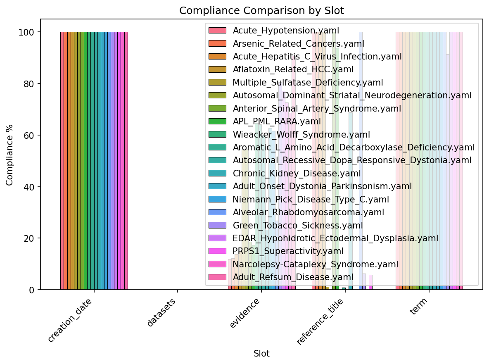
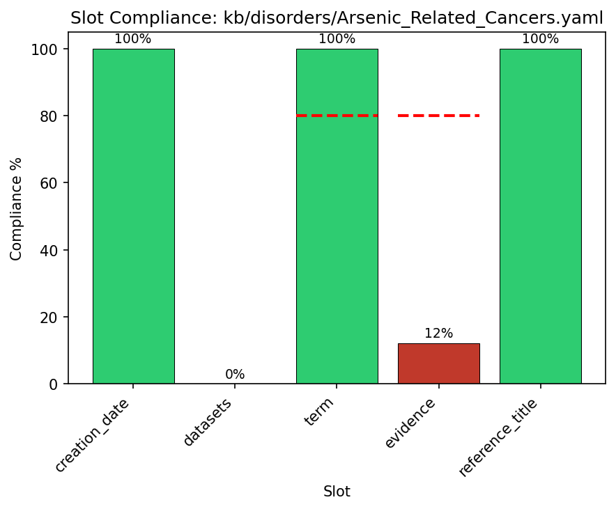
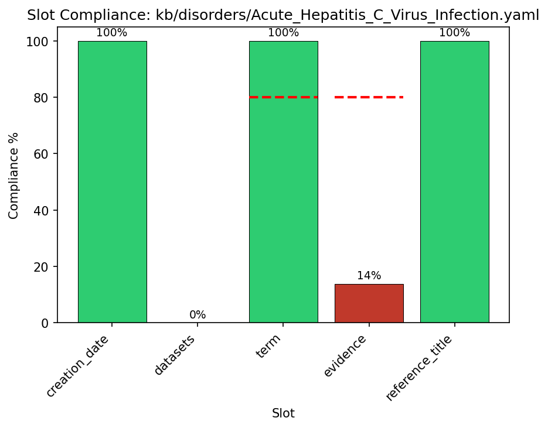
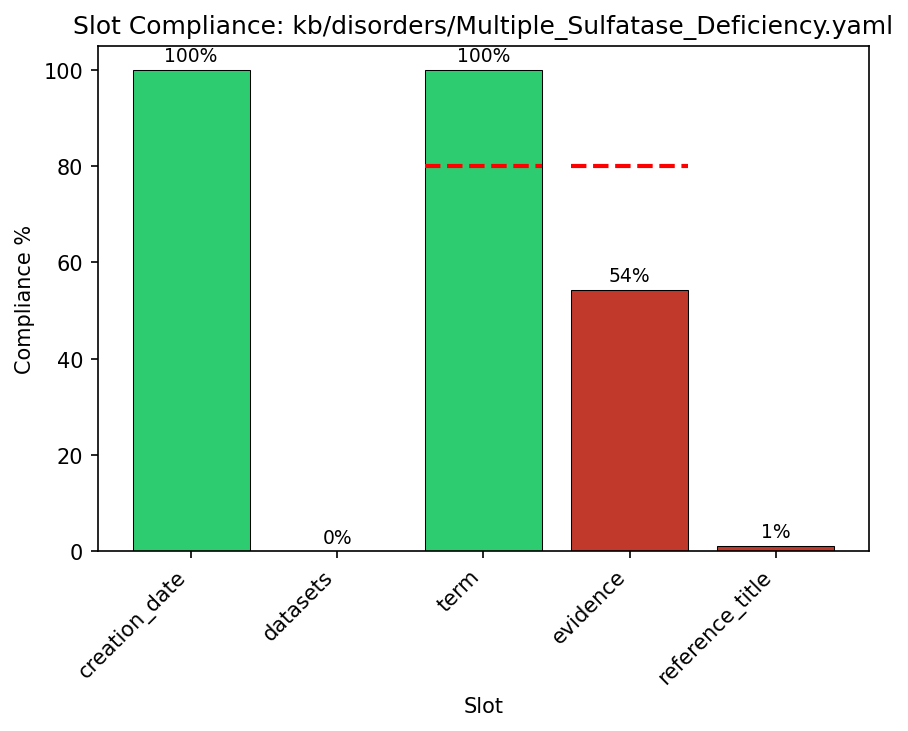
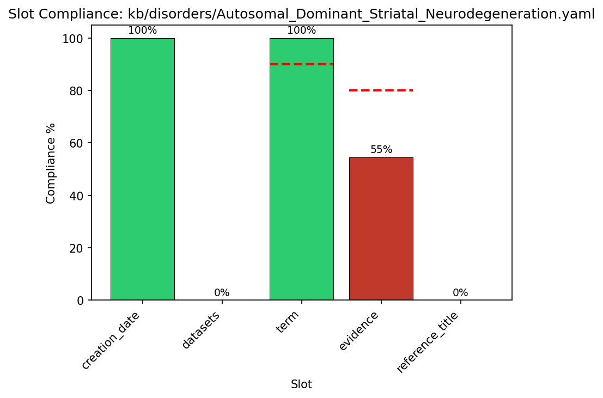
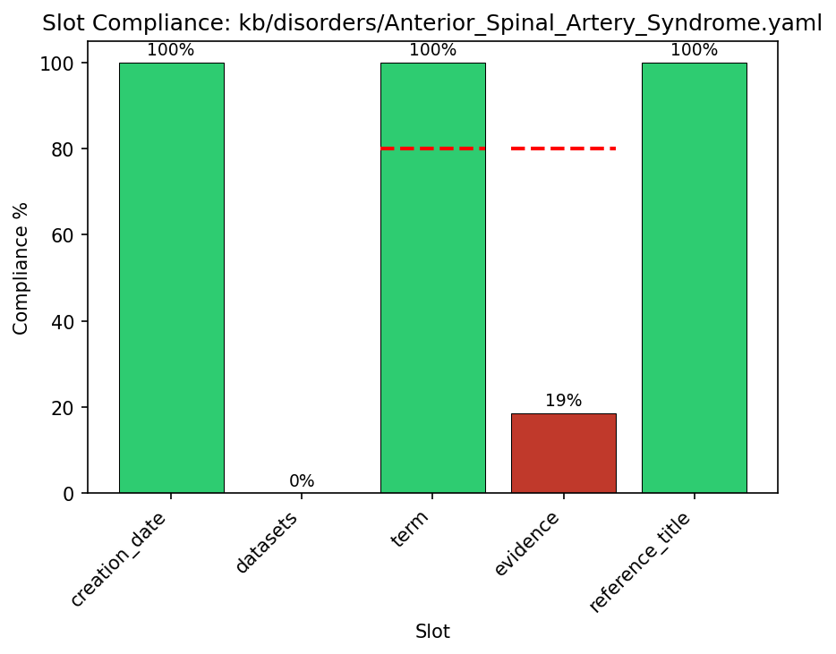
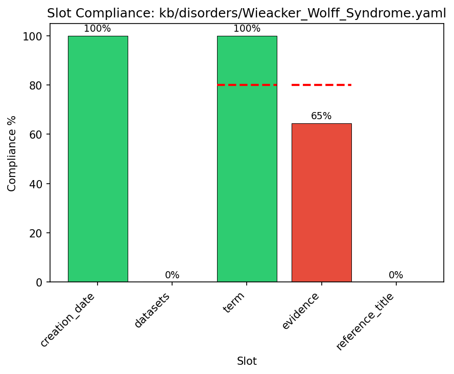
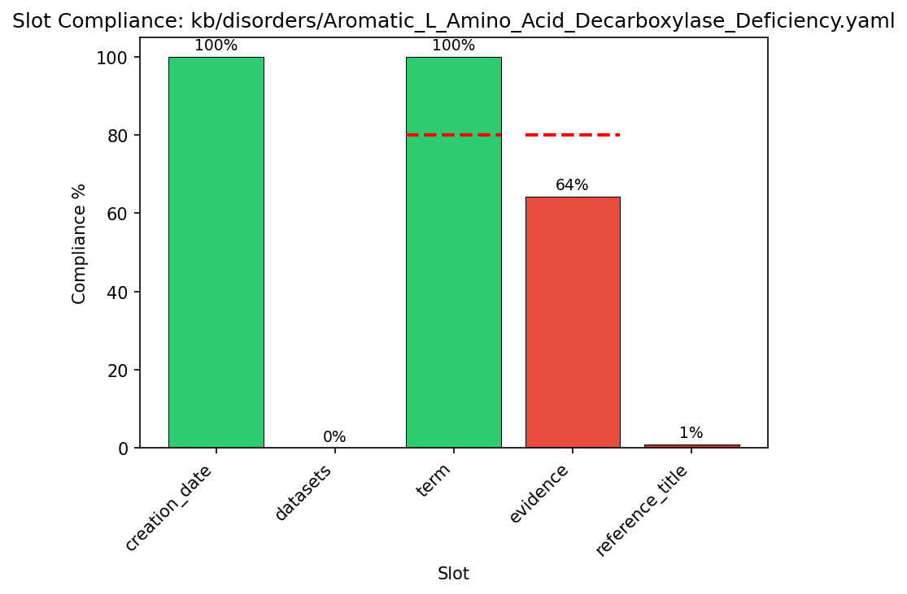

QC Dashboard - Multi-File Comparison
1114 files analyzed (sorted by compliance, lowest first)
Files Analyzed
Average Compliance
Total Checks
Total Violations
Slot Compliance Comparison

Priority Files - Detailed View
Showing the 10 files with lowest compliance for prioritized curation.
#1: Acute_Hypotension.yaml (33.1%)

#2: Arsenic_Related_Cancers.yaml (34.9%)

#3: Acute_Hepatitis_C_Virus_Infection.yaml (36.4%)

#4: Aflatoxin_Related_HCC.yaml (40.0%)

#5: Multiple_Sulfatase_Deficiency.yaml (43.9%)

#6: Autosomal_Dominant_Striatal_Neurodegeneration.yaml (44.1%)

#7: Anterior_Spinal_Artery_Syndrome.yaml (44.2%)

#8: APL_PML_RARA.yaml (45.5%)

#9: Wieacker_Wolff_Syndrome.yaml (47.6%)

#10: Aromatic_L_Amino_Acid_Decarboxylase_Deficiency.yaml (49.2%)

All Files (Sorted by Priority)
Files with lowest compliance are listed first to prioritize curation efforts.
| File | Global | Weighted | Populated | Violations |
|---|---|---|---|---|
#1 Acute_Hypotension.yaml |
33.1% | 35.6% | 41/124 | |
#2 Arsenic_Related_Cancers.yaml |
34.9% | 38.8% | 51/146 | 1 |
#3 Acute_Hepatitis_C_Virus_Infection.yaml |
36.4% | 38.5% | 47/129 | |
#4 Aflatoxin_Related_HCC.yaml |
40.0% | 45.0% | 54/135 | |
#5 Multiple_Sulfatase_Deficiency.yaml |
43.9% | 57.6% | 107/244 | |
#6 Autosomal_Dominant_Striatal_Neurodegeneration.yaml |
44.1% | 57.8% | 41/93 | |
#7 Anterior_Spinal_Artery_Syndrome.yaml |
44.2% | 46.1% | 46/104 | |
#8 APL_PML_RARA.yaml |
45.5% | 51.3% | 65/143 | |
#9 Wieacker_Wolff_Syndrome.yaml |
47.6% | 62.2% | 80/168 | |
#10 Aromatic_L_Amino_Acid_Decarboxylase_Deficiency.yaml |
49.2% | 63.1% | 150/305 | |
Autosomal_Recessive_Dopa_Responsive_Dystonia.yaml |
49.8% | 64.4% | 101/203 | |
Chronic_Kidney_Disease.yaml |
50.0% | 56.2% | 39/78 | |
Adult_Onset_Dystonia_Parkinsonism.yaml |
51.2% | 66.3% | 109/213 | |
Niemann_Pick_Disease_Type_C.yaml |
51.4% | 65.6% | 125/243 | |
Alveolar_Rhabdomyosarcoma.yaml |
52.2% | 54.3% | 70/134 | |
Green_Tobacco_Sickness.yaml |
52.5% | 65.7% | 62/118 | |
EDAR_Hypohidrotic_Ectodermal_Dysplasia.yaml |
52.9% | 68.7% | 63/119 | |
PRPS1_Superactivity.yaml |
52.9% | 65.8% | 72/136 | |
Narcolepsy-Cataplexy_Syndrome.yaml |
53.3% | 67.0% | 49/92 | |
Adult_Refsum_Disease.yaml |
53.5% | 68.1% | 162/303 | |
Myopathy_Lactic_Acidosis_and_Sideroblastic_Anemia.yaml |
53.6% | 67.1% | 142/265 | |
Alpha_1_Antitrypsin_Deficiency.yaml |
54.0% | 60.7% | 115/213 | 1 |
Chronic_Intestinal_Pseudoobstruction.yaml |
54.2% | 63.9% | 26/48 | 1 |
Alveolar_Soft_Part_Sarcoma.yaml |
54.3% | 67.5% | 51/94 | 1 |
Terminal_Osseous_Dysplasia.yaml |
54.3% | 66.7% | 25/46 | 1 |
Prader-Willi_Syndrome.yaml |
54.5% | 71.6% | 96/176 | |
Acute_Annular_Outer_Retinopathy.yaml |
54.7% | 58.0% | 47/86 | 1 |
Acute_Lichenoid_Pityriasis.yaml |
54.8% | 57.9% | 63/115 | |
Sinoatrial_Block.yaml |
54.9% | 67.5% | 28/51 | 1 |
Autosomal_Dominant_Dopa_Responsive_Dystonia.yaml |
54.9% | 68.9% | 123/224 | |
Striate_Palmoplantar_Keratoderma_Type_2.yaml |
55.1% | 69.3% | 87/158 | 1 |
Core_Binding_Factor_AML.yaml |
55.2% | 61.5% | 37/67 | 1 |
Clear_Cell_Renal_Cell_Carcinoma.yaml |
55.4% | 64.3% | 36/65 | 1 |
AGAT_Deficiency.yaml |
55.7% | 60.5% | 98/176 | |
Bronchiectasis.yaml |
55.8% | 67.7% | 58/104 | 1 |
Congenital_Pulmonary_Airway_Malformation.yaml |
55.8% | 70.5% | 58/104 | |
PRPS1_Deficiency_Spectrum.yaml |
55.8% | 70.0% | 106/190 | |
Mediator_Complex_Neurodevelopmental_Disorder.yaml |
55.9% | 68.9% | 171/306 | 1 |
Skin_Fragility_Woolly_Hair_Syndrome.yaml |
55.9% | 68.1% | 19/34 | |
HER2_Positive_Gastric_Cancer.yaml |
56.0% | 62.2% | 42/75 | 1 |
Hypotrichosis_with_Juvenile_Macular_Dystrophy.yaml |
56.0% | 71.8% | 56/100 | |
Infantile_Myofibromatosis.yaml |
56.0% | 69.0% | 14/25 | |
COG1-congenital_disorder_of_glycosylation.yaml |
56.1% | 70.0% | 74/132 | |
Disorder_of_Catecholamine_Synthesis.yaml |
56.4% | 68.9% | 124/220 | |
ANK2_Ankyrin_B_Syndrome.yaml |
56.5% | 59.7% | 70/124 | |
Lesch-Nyhan_Syndrome.yaml |
56.6% | 71.0% | 125/221 | |
DSP_Cardiomyopathy.yaml |
56.6% | 68.2% | 30/53 | 1 |
Hypochondroplasia.yaml |
56.7% | 72.4% | 68/120 | |
KRT85_Ectodermal_Dysplasia.yaml |
56.8% | 71.0% | 25/44 | |
Murine_Typhus.yaml |
57.0% | 72.2% | 85/149 | |
Budd-Chiari_Syndrome.yaml |
57.1% | 70.2% | 44/77 | 1 |
Spaceflight_Associated_Neuro-Ocular_Syndrome.yaml |
57.1% | 72.9% | 44/77 | |
Hemochromatosis.yaml |
57.2% | 70.3% | 186/325 | |
Snijders_Blok-Campeau_Syndrome.yaml |
57.3% | 73.1% | 71/124 | |
Paratyphoid_Fever.yaml |
57.3% | 70.5% | 43/75 | |
Barth_Syndrome.yaml |
57.4% | 70.7% | 78/136 | |
Infantile_Spasms.yaml |
57.4% | 70.2% | 66/115 | |
Biotin_Thiamine_Responsive_Basal_Ganglia_Disease.yaml |
57.5% | 71.8% | 104/181 | |
Small_Cell_Lung_Cancer.yaml |
57.5% | 63.7% | 46/80 | 1 |
Acute_Lymphoblastic_Leukemia.yaml |
57.5% | 65.9% | 65/113 | 1 |
Psoriasis_14_Pustular.yaml |
57.7% | 71.3% | 30/52 | 1 |
Kleefstra_Syndrome.yaml |
57.7% | 70.8% | 56/97 | |
Chronic_Primary_Adrenal_Insufficiency.yaml |
57.8% | 70.3% | 67/116 | |
Deafness-Lymphedema-Leukemia_Syndrome.yaml |
57.8% | 72.3% | 37/64 | |
Hypoplasminogenemia.yaml |
57.8% | 70.0% | 48/83 | 1 |
Cutaneous_Squamous_Cell_Carcinoma.yaml |
57.9% | 69.4% | 44/76 | |
Penttinen_Premature_Aging_Syndrome.yaml |
57.9% | 70.9% | 22/38 | |
Hereditary_Hyperekplexia.yaml |
57.9% | 73.2% | 95/164 | |
Fibrosarcoma.yaml |
58.0% | 71.4% | 40/69 | |
Familial_Sick_Sinus_Syndrome.yaml |
58.1% | 72.8% | 54/93 | |
Hepatic_Fibrinogen_Storage_Disease.yaml |
58.1% | 72.7% | 50/86 | |
aceruloplasminemia.yaml |
58.2% | 68.9% | 57/98 | |
Aicardi_Syndrome.yaml |
58.3% | 73.1% | 63/108 | |
Polycythemia_Vera.yaml |
58.4% | 70.6% | 94/161 | 1 |
Episodic_Ataxia.yaml |
58.5% | 70.0% | 38/65 | 1 |
Arterial_Tortuosity_Syndrome.yaml |
58.5% | 61.8% | 48/82 | 1 |
Autoimmune_Hepatitis.yaml |
58.5% | 65.2% | 24/41 | |
MPDU1-congenital_disorder_of_glycosylation.yaml |
58.6% | 72.6% | 109/186 | |
TP63_Ectodermal_Dysplasia_Spectrum.yaml |
58.6% | 71.1% | 51/87 | 1 |
CRB1_Retinal_Dystrophies.yaml |
58.8% | 75.1% | 50/85 | |
Keratosis_Follicularis_Spinulosa_Decalvans.yaml |
58.9% | 73.5% | 89/151 | |
Down_syndrome.yaml |
59.0% | 71.1% | 79/134 | |
IKBKG_Ectodermal_Dysplasia_with_Immunodeficiency.yaml |
59.1% | 73.6% | 75/127 | |
Generalized_Anxiety_Disorder.yaml |
59.1% | 65.0% | 39/66 | |
Gastroesophageal_Reflux_Disease.yaml |
59.3% | 63.6% | 32/54 | |
Endometriosis.yaml |
59.4% | 63.1% | 38/64 | |
Metachromatic_Leukodystrophy.yaml |
59.4% | 72.2% | 63/106 | |
Tooth_and_Nail_Syndrome.yaml |
59.5% | 70.7% | 44/74 | 1 |
Pemphigus_Vulgaris.yaml |
59.5% | 73.6% | 75/126 | 1 |
ALG9-congenital_disorder_of_glycosylation.yaml |
59.6% | 73.4% | 87/146 | |
Alternating_Hemiplegia_of_Childhood.yaml |
59.6% | 73.0% | 62/104 | |
Gastrointestinal_Stromal_Tumor.yaml |
59.6% | 66.3% | 34/57 | 1 |
Peripheral_Artery_Disease.yaml |
59.6% | 64.0% | 34/57 | |
Odonto-Onycho-Dermal_Dysplasia.yaml |
59.8% | 74.9% | 58/97 | |
Cervical_Artery_Dissection.yaml |
60.0% | 73.5% | 36/60 | |
Polycystic_Kidney_Disease.yaml |
60.1% | 72.7% | 146/243 | 1 |
CACNA1A_Related_Disorder.yaml |
60.2% | 75.1% | 65/108 | |
Adenosine_Kinase_Deficiency.yaml |
60.2% | 75.0% | 118/196 | |
Allergic_Cutaneous_Vasculitis.yaml |
60.2% | 62.9% | 59/98 | 1 |
North_Carolina_Macular_Dystrophy.yaml |
60.2% | 74.7% | 50/83 | |
FLNA_Intestinal_Pseudoobstruction.yaml |
60.3% | 69.4% | 35/58 | |
Lenz-Majewski_hyperostotic_dwarfism.yaml |
60.3% | 72.5% | 35/58 | |
Costello_Syndrome.yaml |
60.4% | 71.0% | 99/164 | 1 |
Age_Related_Macular_Degeneration.yaml |
60.4% | 63.4% | 32/53 | |
MITF_Waardenburg_Tietz_Spectrum.yaml |
60.5% | 74.5% | 46/76 | |
Stevens-Johnson_Syndrome.yaml |
60.5% | 75.1% | 138/228 | |
Medulloblastoma.yaml |
60.6% | 70.2% | 20/33 | |
FLT3_Mutant_AML.yaml |
60.7% | 64.4% | 54/89 | 1 |
Anorexia_Nervosa.yaml |
60.7% | 62.7% | 136/224 | |
Neuromyelitis_Optica.yaml |
60.7% | 70.2% | 85/140 | 5 |
Attention_Deficit-Hyperactivity_Disorder.yaml |
60.9% | 62.9% | 131/215 | |
Cystic_Fibrosis.yaml |
60.9% | 73.0% | 312/512 | |
MET_Exon_14_Skipping_NSCLC.yaml |
60.9% | 65.6% | 39/64 | 1 |
Behcets_Disease.yaml |
61.1% | 66.7% | 22/36 | |
Malan_Syndrome.yaml |
61.1% | 77.0% | 55/90 | |
Punctate_Palmoplantar_Keratoderma.yaml |
61.2% | 74.7% | 60/98 | |
Galactosemia.yaml |
61.2% | 74.4% | 128/209 | |
Pseudopseudohypoparathyroidism.yaml |
61.3% | 75.5% | 68/111 | |
Periventricular_Nodular_Heterotopia.yaml |
61.3% | 76.4% | 57/93 | |
HER2_Positive_Colorectal_Cancer.yaml |
61.4% | 66.1% | 43/70 | 1 |
PRPH2-Related_Retinopathy.yaml |
61.4% | 75.0% | 51/83 | |
Alopecia_Areata.yaml |
61.5% | 63.5% | 24/39 | |
Bipolar_Disorder.yaml |
61.5% | 66.7% | 40/65 | |
Desmoplastic_Small_Round_Cell_Tumor.yaml |
61.5% | 65.7% | 40/65 | 1 |
Heart_Failure.yaml |
61.7% | 64.7% | 37/60 | |
Obstructive_Sleep_Apnea.yaml |
61.7% | 64.3% | 37/60 | |
Congenital_Hypofibrinogenemia.yaml |
61.7% | 75.3% | 29/47 | |
Cardiospondylocarpofacial_Syndrome.yaml |
61.8% | 75.4% | 84/136 | |
Brucellosis.yaml |
61.8% | 75.9% | 76/123 | |
Alport_Syndrome.yaml |
62.0% | 64.6% | 106/171 | |
Psoriasis.yaml |
62.0% | 67.9% | 111/179 | 1 |
Stargardt_Disease.yaml |
62.0% | 75.8% | 178/287 | |
Merkel_Cell_Carcinoma.yaml |
62.2% | 65.4% | 46/74 | 1 |
Carvajal_Syndrome.yaml |
62.2% | 75.3% | 79/127 | |
Seborrheic_Dermatitis.yaml |
62.4% | 76.1% | 93/149 | |
Inborn_Disorder_of_Methionine_Cycle_and_Sulfur_Amino_Acid_Metabolism.yaml |
62.5% | 74.9% | 158/253 | |
Hepatitis_C.yaml |
62.5% | 69.0% | 35/56 | 1 |
Li-Fraumeni_Syndrome.yaml |
62.5% | 65.3% | 100/160 | 1 |
Primary_Sclerosing_Cholangitis.yaml |
62.5% | 67.7% | 25/40 | |
Sjogrens_Syndrome.yaml |
62.5% | 74.7% | 75/120 | |
Juvenile_Polyposis_Syndrome.yaml |
62.6% | 75.6% | 127/203 | |
Glioblastoma_IDH_Wildtype.yaml |
62.6% | 65.0% | 67/107 | 1 |
Obesity.yaml |
62.6% | 67.0% | 57/91 | 1 |
FGFR_Altered_Cholangiocarcinoma.yaml |
62.7% | 66.7% | 52/83 | 1 |
HER2_Positive_Breast_Cancer.yaml |
63.0% | 68.3% | 34/54 | 1 |
Central_Retinal_Artery_Occlusion.yaml |
63.1% | 75.9% | 41/65 | |
Dermatomyositis.yaml |
63.1% | 77.2% | 149/236 | |
Chronic_Myeloid_Leukemia.yaml |
63.2% | 67.4% | 60/95 | 1 |
Otopalatodigital_Spectrum_Disorders.yaml |
63.2% | 75.9% | 48/76 | |
Primary_Myelofibrosis.yaml |
63.3% | 74.2% | 133/210 | 1 |
Bilateral_Striopallidodentate_Calcinosis.yaml |
63.4% | 75.4% | 59/93 | |
Scarlet_Fever.yaml |
63.5% | 75.0% | 47/74 | 1 |
Krabbe_Disease.yaml |
63.5% | 76.8% | 101/159 | |
Camptodactyly.yaml |
63.6% | 68.0% | 42/66 | 1 |
Irritable_Bowel_Syndrome.yaml |
63.6% | 63.9% | 49/77 | 1 |
Nasopharyngeal_Carcinoma.yaml |
63.6% | 68.5% | 56/88 | 1 |
Okur_Chung_neurodevelopmental_syndrome.yaml |
63.6% | 74.5% | 56/88 | |
Granulomatosis_with_Polyangiitis.yaml |
63.8% | 76.6% | 155/243 | |
Platelet-Type_von_Willebrand_Disease.yaml |
64.0% | 76.9% | 55/86 | |
Blepharophimosis_Ptosis_and_Epicanthus_Inversus_Syndrome.yaml |
64.1% | 77.6% | 50/78 | |
MGAT2-congenital_disorder_of_glycosylation.yaml |
64.2% | 77.2% | 79/123 | |
Clear_Cell_Sarcoma.yaml |
64.3% | 74.4% | 45/70 | |
Multiple_System_Atrophy.yaml |
64.3% | 79.6% | 63/98 | |
Thromboangiitis_Obliterans.yaml |
64.3% | 77.1% | 74/115 | |
RPGR-Related_Retinopathy.yaml |
64.4% | 79.4% | 47/73 | |
Osteoglophonic_Dysplasia.yaml |
64.5% | 78.8% | 69/107 | |
Pfeiffer_Syndrome.yaml |
64.6% | 76.1% | 31/48 | |
Pancreatic_Neuroendocrine_Tumor.yaml |
64.6% | 75.6% | 73/113 | |
Hepatocellular_Carcinoma.yaml |
64.7% | 68.2% | 97/150 | 1 |
Fragile_X_Syndrome.yaml |
64.7% | 74.0% | 108/167 | |
Retinoblastoma.yaml |
64.7% | 71.9% | 33/51 | 1 |
Epilepsy.yaml |
64.9% | 72.8% | 109/168 | 1 |
Autoimmune_Polyendocrine_Syndrome_Type_1.yaml |
65.2% | 77.1% | 73/112 | |
IDH_Mutant_Astrocytoma.yaml |
65.2% | 68.8% | 45/69 | 1 |
Multiple_Endocrine_Neoplasia_Type_2.yaml |
65.3% | 67.9% | 47/72 | 1 |
Coronary_Artery_Disease.yaml |
65.4% | 69.5% | 34/52 | |
Thallium_Poisoning.yaml |
65.4% | 77.8% | 136/208 | |
IDH_Mutant_Cholangiocarcinoma.yaml |
65.4% | 68.5% | 53/81 | 1 |
Primary_Cutaneous_Aggressive_Epidermotropic_CD8_T-cell_Lymphoma.yaml |
65.5% | 77.9% | 55/84 | |
Gastric_Cancer_H_pylori_Associated.yaml |
65.5% | 72.1% | 76/116 | |
Glaucoma.yaml |
65.6% | 73.5% | 63/96 | 1 |
Atypical_Hemolytic_Uremic_Syndrome.yaml |
65.9% | 68.0% | 118/179 | |
Pheochromocytoma_Paraganglioma.yaml |
66.0% | 69.1% | 62/94 | 1 |
Systemic_Sclerosis.yaml |
66.0% | 71.8% | 33/50 | |
Benign_Prostatic_Hyperplasia.yaml |
66.2% | 69.1% | 45/68 | 1 |
Giant_Cell_Arteritis.yaml |
66.2% | 79.1% | 94/142 | |
Liver_Cirrhosis.yaml |
66.3% | 72.2% | 67/101 | |
Burkitt_Lymphoma.yaml |
66.7% | 70.9% | 52/78 | 1 |
Kosaki_Overgrowth_Syndrome.yaml |
66.7% | 76.2% | 50/75 | |
Major_Depressive_Disorder.yaml |
66.7% | 70.1% | 52/78 | |
Pinta.yaml |
66.7% | 68.4% | 10/15 | |
Polymyositis.yaml |
66.7% | 69.9% | 32/48 | 1 |
Primary_Biliary_Cholangitis.yaml |
66.7% | 70.0% | 32/48 | |
Essential_Thrombocythemia.yaml |
66.9% | 78.1% | 97/145 | 1 |
Adenylosuccinate_Lyase_Deficiency.yaml |
66.9% | 73.9% | 166/248 | |
Uveal_Melanoma.yaml |
67.0% | 68.8% | 67/100 | 1 |
EBV_Associated_Gastric_Cancer.yaml |
67.1% | 72.0% | 53/79 | 1 |
Juvenile_Idiopathic_Arthritis.yaml |
67.1% | 72.5% | 49/73 | 1 |
Kaposi_Sarcoma.yaml |
67.4% | 69.9% | 58/86 | 1 |
IDH_Mutant_Oligodendroglioma.yaml |
67.5% | 69.3% | 54/80 | 1 |
Hemophilia_A.yaml |
67.5% | 74.4% | 79/117 | |
HPV_Negative_Head_and_Neck_Cancer.yaml |
67.6% | 69.7% | 75/111 | 1 |
Primary_Tonsillar_Lymphoma.yaml |
67.7% | 62.8% | 113/167 | 4 |
FGFR1_Hypogonadotropic_Hypogonadism.yaml |
67.9% | 81.5% | 36/53 | |
IDH_Mutant_AML.yaml |
68.0% | 70.2% | 66/97 | 1 |
RET_Fusion_Thyroid_Cancer.yaml |
68.1% | 70.3% | 49/72 | 1 |
Triple_Negative_Breast_Cancer.yaml |
68.1% | 70.9% | 47/69 | 1 |
Chronic_Lymphocytic_Leukemia.yaml |
68.1% | 71.5% | 62/91 | 1 |
Autosomal_Dominant_Cerebellar_Ataxia_Type_III.yaml |
68.1% | 71.0% | 139/204 | |
Medulloblastoma_SHH_Activated.yaml |
68.3% | 77.8% | 56/82 | |
FGFR_Altered_Urothelial_Carcinoma.yaml |
68.3% | 70.3% | 41/60 | 1 |
Diffuse_Large_B_Cell_Lymphoma.yaml |
68.7% | 71.9% | 68/99 | 1 |
Spondyloepimetaphyseal_Dysplasia_Strudwick_Type.yaml |
69.0% | 80.4% | 87/126 | |
Neuroblastoma.yaml |
69.1% | 73.8% | 47/68 | 1 |
Atrial_Fibrillation.yaml |
69.4% | 73.3% | 50/72 | 1 |
Beta_Thalassemia.yaml |
69.4% | 76.1% | 100/144 | |
Pancreatic_Ductal_Adenocarcinoma.yaml |
69.5% | 72.7% | 123/177 | 3 |
Medulloblastoma_WNT_Activated.yaml |
69.7% | 71.4% | 53/76 | 1 |
Osteosarcoma.yaml |
70.1% | 80.2% | 61/87 | 1 |
Ankylosing_Spondylitis.yaml |
70.7% | 74.9% | 82/116 | |
Frontotemporal_Dementia.yaml |
70.8% | 71.8% | 34/48 | 2 |
Influenza.yaml |
70.8% | 80.4% | 51/72 | |
Kawasaki_Disease.yaml |
70.8% | 78.7% | 204/288 | |
Warburg_Micro_Syndrome.yaml |
70.9% | 74.7% | 107/151 | |
Psoriatic_Arthritis.yaml |
70.9% | 81.4% | 39/55 | |
Polycystic_Ovary_Syndrome.yaml |
71.0% | 72.1% | 44/62 | |
Fibromyalgia.yaml |
71.0% | 75.1% | 71/100 | |
Gout.yaml |
71.1% | 74.5% | 54/76 | |
Van_Buchem_Disease.yaml |
71.2% | 76.9% | 74/104 | |
Gastric_Ulcer.yaml |
71.4% | 80.0% | 5/7 | |
MSI_High_Colorectal_Cancer.yaml |
71.6% | 74.6% | 73/102 | 1 |
Ataxia_Telangiectasia.yaml |
71.6% | 74.7% | 194/271 | |
Von_Hippel-Lindau_Disease.yaml |
71.9% | 74.1% | 64/89 | |
Dystroglycanopathy.yaml |
72.0% | 77.8% | 144/200 | |
Immune_Thrombocytopenia.yaml |
72.0% | 78.5% | 36/50 | |
NTRK_Fusion_Positive_Cancer.yaml |
72.1% | 73.6% | 44/61 | 1 |
Malignant_Mesothelioma.yaml |
72.2% | 76.0% | 57/79 | 1 |
Sengers_syndrome.yaml |
72.3% | 79.8% | 99/137 | |
3-Methylcrotonyl-CoA_Carboxylase_Deficiency.yaml |
72.3% | 76.1% | 159/220 | |
Cervical_Cancer.yaml |
72.3% | 76.4% | 73/101 | |
Hartsfield_Syndrome.yaml |
72.3% | 81.7% | 47/65 | |
Danon_disease.yaml |
72.4% | 78.6% | 110/152 | |
Atopic_Dermatitis.yaml |
72.6% | 76.3% | 85/117 | 1 |
Encephalocraniocutaneous_Lipomatosis.yaml |
72.7% | 78.6% | 40/55 | |
Metastatic_Prostate_Cancer.yaml |
72.8% | 73.1% | 59/81 | 1 |
PKP2_Cardiomyopathy.yaml |
72.8% | 78.0% | 59/81 | |
Focal_Segmental_Glomerulosclerosis.yaml |
72.8% | 75.9% | 110/151 | 1 |
Metastatic_Colorectal_Cancer.yaml |
73.0% | 77.9% | 54/74 | |
HPV_Positive_Head_and_Neck_Cancer.yaml |
73.1% | 75.4% | 57/78 | 1 |
Familial_Sleep_Related_Hypermotor_Epilepsy.yaml |
73.2% | 80.7% | 109/149 | 1 |
Metastatic_Melanoma.yaml |
73.2% | 75.7% | 60/82 | 1 |
Follicular_Lymphoma.yaml |
73.2% | 77.2% | 82/112 | |
BRAF_Mutant_Thyroid_Cancer.yaml |
73.3% | 74.6% | 63/86 | 1 |
Acute_Megakaryoblastic_Leukemia.yaml |
73.4% | 78.3% | 94/128 | |
Laryngeal_Squamous_Cell_Carcinoma.yaml |
73.6% | 77.0% | 81/110 | |
KRAS_G12C_Mutant_NSCLC.yaml |
73.8% | 75.6% | 59/80 | 1 |
Metastatic_Ovarian_Cancer.yaml |
73.8% | 81.0% | 59/80 | |
ER_Positive_Breast_Cancer.yaml |
73.8% | 77.4% | 45/61 | 1 |
Metastatic_Renal_Cell_Carcinoma.yaml |
73.8% | 75.7% | 62/84 | |
Autoimmune_Hemolytic_Anemia.yaml |
73.9% | 78.4% | 34/46 | |
Adult_T_Cell_Leukemia_Lymphoma.yaml |
74.0% | 75.7% | 71/96 | 1 |
Osteoporosis.yaml |
74.0% | 75.6% | 74/100 | |
MSI_High_Endometrial_Cancer.yaml |
74.1% | 75.9% | 60/81 | 1 |
Thomsen_and_Becker_disease.yaml |
74.1% | 78.8% | 40/54 | 1 |
Bartter_Syndrome.yaml |
74.1% | 80.7% | 209/282 | |
Netherton_Syndrome.yaml |
74.3% | 80.0% | 153/206 | |
Cystinosis.yaml |
74.3% | 83.4% | 335/451 | |
CADASIL_Type_1.yaml |
74.4% | 82.0% | 116/156 | |
Tuberous_Sclerosis_Complex.yaml |
74.5% | 78.1% | 204/274 | |
CTCF-related_Neurodevelopmental_Disorder.yaml |
74.5% | 78.4% | 70/94 | |
Hyperlipidemia.yaml |
74.5% | 81.2% | 149/200 | 1 |
Ulcerative_Colitis.yaml |
74.7% | 75.4% | 118/158 | 1 |
Achondrogenesis_Type_II.yaml |
75.0% | 85.0% | 111/148 | |
Familial_Adenomatous_Polyposis.yaml |
75.0% | 77.7% | 54/72 | |
Kabuki_Syndrome.yaml |
75.0% | 80.6% | 222/296 | |
Langerhans_Cell_Histiocytosis.yaml |
75.0% | 79.6% | 60/80 | |
Pulmonary_hypertension.yaml |
75.0% | 79.3% | 87/116 | 1 |
Bardet-Biedl_Syndrome.yaml |
75.1% | 81.4% | 127/169 | 1 |
Type_2_Diabetes_Mellitus.yaml |
75.2% | 77.8% | 115/153 | 2 |
Leptospirosis.yaml |
75.4% | 84.4% | 227/301 | |
Mixed_Connective_Tissue_Disease.yaml |
75.6% | 80.1% | 31/41 | |
Crouzon_Syndrome_with_Acanthosis_Nigricans.yaml |
75.7% | 81.5% | 28/37 | |
Autism_Spectrum_Disorder.yaml |
75.8% | 79.2% | 69/91 | |
Papillary_Thyroid_Carcinoma.yaml |
75.9% | 79.8% | 44/58 | |
Huntington_Disease.yaml |
75.9% | 81.6% | 173/228 | 4 |
Inherited_Ichthyosis.yaml |
75.9% | 79.2% | 107/141 | |
Diffuse_Astrocytoma.yaml |
75.9% | 80.6% | 63/83 | |
PCWH_syndrome.yaml |
75.9% | 80.1% | 60/79 | 1 |
Crouzon_Syndrome.yaml |
76.0% | 83.7% | 38/50 | |
Pouchitis.yaml |
76.1% | 81.7% | 35/46 | |
Testicular_Germ_Cell_Tumor.yaml |
76.3% | 78.5% | 58/76 | |
Joubert_syndrome.yaml |
76.4% | 81.0% | 449/588 | |
Metastatic_NSCLC.yaml |
76.4% | 77.9% | 68/89 | 1 |
Campylobacteriosis.yaml |
76.5% | 83.1% | 143/187 | |
Charcot-Marie-Tooth_Disease.yaml |
76.5% | 80.9% | 39/51 | |
FICUS_syndrome.yaml |
76.6% | 86.1% | 59/77 | |
15q11q13_Microduplication_Syndrome.yaml |
76.9% | 80.1% | 50/65 | |
Drug_or_Toxin-Induced_Pulmonary_Arterial_Hypertension.yaml |
77.1% | 78.1% | 54/70 | 3 |
Cervical_Squamous_Cell_Carcinoma.yaml |
77.2% | 81.1% | 44/57 | |
Cardiofaciocutaneous_Syndrome.yaml |
77.3% | 82.5% | 51/66 | |
Rheumatoid_Arthritis.yaml |
77.3% | 77.9% | 249/322 | 4 |
Gorham-Stout_disease.yaml |
77.4% | 80.6% | 41/53 | 1 |
Type_I_Diabetes.yaml |
77.6% | 76.4% | 211/272 | 5 |
Classic_Familial_Adenomatous_Polyposis.yaml |
77.7% | 85.5% | 164/211 | |
ATTR_Amyloidosis.yaml |
77.7% | 76.3% | 199/256 | 2 |
Diamond-Blackfan_Anemia.yaml |
77.8% | 80.4% | 84/108 | |
Urticaria.yaml |
77.8% | 88.0% | 7/9 | |
IgA_Nephropathy.yaml |
77.9% | 82.6% | 134/172 | |
BEST1_Bestrophinopathies.yaml |
78.0% | 81.8% | 71/91 | |
Warsaw_breakage_syndrome.yaml |
78.0% | 80.2% | 64/82 | |
KIT_Mutant_Melanoma.yaml |
78.1% | 80.1% | 75/96 | 1 |
Acoustic_Neuroma.yaml |
78.2% | 77.1% | 86/110 | 3 |
Proteus_syndrome.yaml |
78.2% | 86.4% | 122/156 | |
Primary_Ciliary_Dyskinesia.yaml |
78.3% | 84.5% | 238/304 | |
Huntingtons_Disease.yaml |
78.5% | 81.4% | 175/223 | 1 |
Delpire-McNeill_Syndrome.yaml |
78.6% | 82.6% | 66/84 | |
IgG4-Related_Disease.yaml |
78.6% | 81.2% | 66/84 | |
Metastatic_HCC.yaml |
78.6% | 84.2% | 77/98 | |
Crohn_Disease.yaml |
78.7% | 78.4% | 277/352 | 4 |
Ewing_Sarcoma.yaml |
78.8% | 83.2% | 52/66 | |
Arteriosclerotic_Retinopathy.yaml |
78.9% | 78.0% | 56/71 | 2 |
Dacryocystitis-Osteopoikilosis_Syndrome.yaml |
79.0% | 82.7% | 64/81 | |
HIDEA_Syndrome.yaml |
79.1% | 83.0% | 53/67 | 2 |
Inherited_Aplastic_Anemia.yaml |
79.2% | 82.2% | 118/149 | |
Guanidinoacetate_Methyltransferase_Deficiency.yaml |
79.2% | 81.0% | 141/178 | |
STRA6-related_syndromic_microphthalmia.yaml |
79.2% | 81.5% | 42/53 | |
Trachoma.yaml |
79.3% | 80.3% | 23/29 | |
Pycnodysostosis.yaml |
79.4% | 86.8% | 123/155 | |
Homocystinuria.yaml |
79.4% | 85.9% | 323/407 | |
Cervical_Adenocarcinoma.yaml |
79.4% | 82.5% | 50/63 | |
Autosomal_Dominant_Polycystic_Kidney_Disease.yaml |
79.4% | 87.3% | 154/194 | |
SHH_Holoprosencephaly_Spectrum.yaml |
79.4% | 82.1% | 54/68 | |
Sarcoidosis.yaml |
79.4% | 85.4% | 162/204 | |
Salla_Disease.yaml |
79.4% | 81.4% | 112/141 | 1 |
Pilarowski-Bjornsson_syndrome.yaml |
79.5% | 82.6% | 31/39 | |
Argininosuccinic_Aciduria.yaml |
79.5% | 80.3% | 190/239 | |
Achoo_Syndrome.yaml |
79.5% | 86.6% | 70/88 | |
H3_K27_Altered_Diffuse_Midline_Glioma.yaml |
79.6% | 80.7% | 74/93 | 1 |
ALDH18A1_Cutis_Laxa.yaml |
79.6% | 80.7% | 113/142 | |
Myoclonus_Dystonia_Syndrome.yaml |
79.6% | 81.4% | 117/147 | |
Plague.yaml |
79.6% | 83.0% | 82/103 | |
Graves_Disease.yaml |
79.8% | 85.1% | 202/253 | 2 |
5-Oxoprolinase_Deficiency.yaml |
79.9% | 86.4% | 131/164 | |
Porphyria_due_to_ALA_Dehydratase_Deficiency.yaml |
79.9% | 85.7% | 159/199 | |
Parkinsons_Disease.yaml |
79.9% | 82.4% | 227/284 | 2 |
MED13_Syndrome.yaml |
80.0% | 80.9% | 88/110 | 2 |
Multiple_Synostoses_Syndrome.yaml |
80.0% | 83.4% | 40/50 | |
NPM1_Mutant_AML.yaml |
80.0% | 81.6% | 72/90 | 1 |
Twin_to_Twin_Transfusion_Syndrome.yaml |
80.0% | 81.3% | 84/105 | |
Thanatophoric_Dysplasia_Type_1.yaml |
80.1% | 81.6% | 157/196 | |
Neuromyelitis_Optica_Spectrum_Disorder_with_Anti-AQP4_Antibodies.yaml |
80.3% | 82.1% | 114/142 | |
Bladder_Urothelial_Carcinoma.yaml |
80.5% | 84.3% | 70/87 | |
Cholangiocarcinoma.yaml |
80.5% | 83.1% | 66/82 | |
ALDH18A1_De_Barsy_Spectrum.yaml |
80.6% | 81.6% | 145/180 | |
Celiac_Disease.yaml |
80.6% | 82.4% | 108/134 | |
Autosomal_Recessive_Ataxia_Due_to_Ubiquinone_Deficiency.yaml |
80.6% | 81.2% | 129/160 | |
Sclerosing_Cholangitis.yaml |
80.6% | 82.5% | 129/160 | |
Metastatic_Breast_Carcinoma.yaml |
80.6% | 82.2% | 75/93 | 1 |
Central_Core_Myopathy.yaml |
80.7% | 83.7% | 117/145 | |
Shprintzen-Goldberg_Syndrome.yaml |
80.7% | 84.9% | 46/57 | |
angioosteohypertrophic_syndrome.yaml |
80.7% | 83.6% | 46/57 | |
YWHAG_Syndrome.yaml |
80.8% | 83.5% | 59/73 | |
Minimal_Change_Disease.yaml |
80.8% | 82.6% | 156/193 | |
ADan_amyloidosis.yaml |
80.9% | 83.9% | 38/47 | |
Jackson-Weiss_Syndrome.yaml |
80.9% | 86.9% | 38/47 | |
NRAS_Mutant_Melanoma.yaml |
80.9% | 82.2% | 72/89 | 2 |
Alpha_Thalassemia.yaml |
81.0% | 84.2% | 85/105 | |
Multiple_Mitochondrial_Dysfunctions_Syndrome_9B.yaml |
81.0% | 81.9% | 204/252 | |
3-Hydroxy-3-Methylglutaric_Aciduria.yaml |
81.1% | 82.2% | 214/264 | |
Amyotrophic_Lateral_Sclerosis.yaml |
81.2% | 87.5% | 276/340 | |
Furunculosis.yaml |
81.2% | 88.8% | 95/117 | |
Ebola_Virus_Disease_EVD.yaml |
81.2% | 80.2% | 134/165 | 2 |
Human_African_Trypanosomiasis.yaml |
81.4% | 80.6% | 48/59 | |
Retinal_Arterial_Tortuosity.yaml |
81.5% | 83.3% | 66/81 | |
Hand_Foot_and_Mouth_Disease.yaml |
81.5% | 88.0% | 172/211 | |
Chemotherapy_Induced_Diarrhea.yaml |
81.6% | 82.6% | 151/185 | |
BRAF_V600E_Mutant_Colorectal_Cancer.yaml |
81.7% | 81.1% | 156/191 | 1 |
Neuronal_Ceroid_Lipofuscinosis.yaml |
81.7% | 88.0% | 116/142 | |
Peripartum_Cardiomyopathy.yaml |
81.7% | 85.1% | 67/82 | |
Dystrophic_Epidermolysis_Bullosa.yaml |
81.7% | 82.8% | 215/263 | |
Melanoma_in_Congenital_Melanocytic_Nevus.yaml |
81.8% | 82.5% | 112/137 | 1 |
Peroxisome_Biogenesis_Disorder.yaml |
81.8% | 81.1% | 224/274 | 2 |
TGFBI_Corneal_Dystrophies.yaml |
81.8% | 84.1% | 63/77 | |
Gorlin_Syndrome.yaml |
81.9% | 83.3% | 227/277 | |
Greig_Cephalopolysyndactyly.yaml |
82.1% | 85.0% | 32/39 | |
Giant_Cell_Hepatitis_With_Autoimmune_Hemolytic_Anemia.yaml |
82.1% | 84.7% | 87/106 | |
Esophageal_Squamous_Cell_Carcinoma.yaml |
82.2% | 85.0% | 106/129 | |
Primary_Carnitine_Deficiency.yaml |
82.2% | 83.6% | 157/191 | |
COL11A2_Hearing_Loss.yaml |
82.2% | 84.8% | 37/45 | |
Tay-Sachs_Disease.yaml |
82.3% | 83.9% | 195/237 | |
2-Methylbutyryl-CoA_Dehydrogenase_Deficiency.yaml |
82.4% | 82.5% | 182/221 | |
Autosomal_Recessive_Congenital_Ichthyosis.yaml |
82.4% | 85.7% | 131/159 | |
Arsenic_Poisoning.yaml |
82.4% | 83.7% | 211/256 | 1 |
Arginase_Deficiency.yaml |
82.4% | 83.1% | 202/245 | |
Castleman_Disease.yaml |
82.5% | 85.4% | 80/97 | 1 |
Familial_Hypercholesterolemia.yaml |
82.5% | 87.2% | 311/377 | |
Stankiewicz_Isidor_syndrome.yaml |
82.5% | 84.6% | 66/80 | |
Isovaleric_Acidemia.yaml |
82.5% | 87.8% | 203/246 | |
Sickle_Cell_Disease.yaml |
82.6% | 84.2% | 142/172 | |
Achondroplasia.yaml |
82.6% | 88.5% | 166/201 | |
You-Hoover-Fong_Syndrome.yaml |
82.6% | 88.0% | 38/46 | |
capillary_leak_syndrome.yaml |
82.6% | 85.3% | 38/46 | |
Medullary_Thyroid_Carcinoma.yaml |
82.8% | 85.4% | 77/93 | 1 |
BRAF_V600E_Mutant_NSCLC.yaml |
82.8% | 82.6% | 130/157 | 1 |
Bulimia_Nervosa.yaml |
82.8% | 85.1% | 53/64 | |
SUFU-related_Nevoid_Basal_Cell_Carcinoma_Syndrome.yaml |
82.9% | 88.1% | 58/70 | |
Myotonic_Dystrophy_Type_1.yaml |
82.9% | 84.8% | 126/152 | 1 |
Scurvy.yaml |
82.9% | 85.2% | 34/41 | |
Arthrogryposis_Multiplex_Congenita.yaml |
83.0% | 85.3% | 73/88 | |
Pentanucleotide_Repeat_Familial_Adult_Myoclonus_Epilepsy.yaml |
83.0% | 83.8% | 161/194 | 1 |
Glucose-6-Phosphate_Dehydrogenase_G6PD_Deficiency.yaml |
83.0% | 84.7% | 127/153 | |
Dentici-Novelli_neurodevelopmental_syndrome.yaml |
83.0% | 85.9% | 44/53 | |
Oroya_Fever.yaml |
83.0% | 84.1% | 93/112 | |
Hereditary_Breast_and_Ovarian_Cancer_Syndrome.yaml |
83.1% | 83.2% | 108/130 | 1 |
Ferguson-Bonni_Neurodevelopmental_Syndrome.yaml |
83.1% | 86.4% | 59/71 | |
Angiosarcoma.yaml |
83.3% | 84.2% | 120/144 | |
Charlevoix-Saguenay_spastic_ataxia.yaml |
83.3% | 85.6% | 50/60 | |
PTEN_Hamartoma_Tumor_Syndrome.yaml |
83.3% | 85.3% | 115/138 | |
Monkeypox.yaml |
83.4% | 83.0% | 151/181 | 2 |
Bejel.yaml |
83.5% | 85.5% | 66/79 | |
Pelizaeus_Merzbacher_Disease.yaml |
83.6% | 85.8% | 183/219 | |
Acute_Myeloid_Leukemia_with_CEBPA_Somatic_Mutations.yaml |
83.6% | 87.1% | 92/110 | |
Ainhum.yaml |
83.6% | 89.9% | 46/55 | |
Subacute_Inflammatory_Demyelinating_Polyneuropathy.yaml |
83.6% | 85.8% | 46/55 | 1 |
Esophageal_Atresia.yaml |
83.7% | 88.7% | 128/153 | |
Hao-Fountain_syndrome.yaml |
83.7% | 86.2% | 41/49 | |
Nestor-Guillermo_progeria_syndrome.yaml |
83.7% | 86.2% | 36/43 | |
Rabies.yaml |
83.7% | 84.3% | 36/43 | |
Pantothenate_Kinase-Associated_Neurodegeneration.yaml |
83.8% | 85.7% | 83/99 | |
Hand-Foot-Genital_Syndrome.yaml |
83.9% | 86.0% | 47/56 | |
Mowat-Wilson_syndrome.yaml |
83.9% | 86.7% | 47/56 | |
Acrodysostosis.yaml |
84.0% | 85.1% | 63/75 | |
Temple-Baraitser_Syndrome.yaml |
84.0% | 86.6% | 137/163 | |
Esophageal_Carcinoma.yaml |
84.1% | 86.0% | 74/88 | |
3-Hydroxyisobutyryl-CoA_Hydrolase_Deficiency.yaml |
84.1% | 85.7% | 106/126 | |
Congenital_Adrenal_Hyperplasia.yaml |
84.1% | 86.4% | 122/145 | |
Rett_Syndrome.yaml |
84.2% | 85.8% | 170/202 | |
Neurofibromatosis_Type_1.yaml |
84.3% | 86.3% | 150/178 | |
Hypereosinophilic_Syndrome.yaml |
84.3% | 87.1% | 129/153 | |
Basal_Cell_Carcinoma.yaml |
84.3% | 86.0% | 226/268 | 1 |
Ehlers-Danlos_Syndrome_COL5A1-related.yaml |
84.4% | 84.8% | 108/128 | |
Primary_Polyarteritis_Nodosa.yaml |
84.4% | 80.5% | 65/77 | 4 |
Small_Intestinal_Bacterial_Overgrowth.yaml |
84.4% | 86.7% | 65/77 | |
Labyrinthitis.yaml |
84.5% | 86.9% | 185/219 | 1 |
Rhabdoid_Tumor.yaml |
84.5% | 87.3% | 71/84 | |
Infantile_Hypercalcemia.yaml |
84.6% | 88.5% | 208/246 | |
Osteogenesis_Imperfecta_Type_I.yaml |
84.6% | 89.0% | 33/39 | |
Taurodontism.yaml |
84.7% | 90.1% | 116/137 | |
CHIME_syndrome.yaml |
84.7% | 88.0% | 50/59 | |
Synovial_Sarcoma.yaml |
84.8% | 85.3% | 78/92 | 1 |
Multisystem_Inflammatory_Syndrome_in_Children_MIS-C.yaml |
84.8% | 85.6% | 173/204 | 1 |
Holt-Oram_Syndrome.yaml |
84.9% | 86.3% | 118/139 | 2 |
erythromelalgia.yaml |
84.9% | 86.8% | 45/53 | |
Peutz_Jeghers_polyp.yaml |
85.0% | 88.1% | 136/160 | |
Embryonal_Rhabdomyosarcoma.yaml |
85.1% | 88.0% | 57/67 | |
Kilquist_Syndrome.yaml |
85.1% | 85.4% | 57/67 | |
Wissler_syndrome.yaml |
85.1% | 87.4% | 160/188 | |
Malignant_Atrophic_Papulosis.yaml |
85.1% | 86.8% | 63/74 | |
Hypophosphatasia.yaml |
85.2% | 86.2% | 132/155 | |
Tall_Stature-Intellectual_Disability-Renal_Anomalies_Syndrome.yaml |
85.2% | 87.1% | 69/81 | |
Panuveitis.yaml |
85.2% | 85.6% | 75/88 | 2 |
Ehlers-Danlos_Syndrome.yaml |
85.2% | 84.4% | 208/244 | 1 |
Nevus_of_Ota.yaml |
85.3% | 87.8% | 58/68 | |
Ovarian_High-Grade_Serous_Carcinoma.yaml |
85.3% | 87.3% | 93/109 | |
Borderline_Personality_Disorder.yaml |
85.3% | 86.9% | 64/75 | |
Erdheim-Chester_Disease.yaml |
85.4% | 89.4% | 35/41 | |
Pemphigus_Erythematosus.yaml |
85.4% | 87.2% | 41/48 | |
Glutaryl-CoA_Dehydrogenase_Deficiency.yaml |
85.4% | 88.8% | 182/213 | |
Dermatofibrosarcoma_Protuberans.yaml |
85.5% | 87.9% | 47/55 | 1 |
Spasticity-Ataxia-Gait_Anomalies_Syndrome.yaml |
85.5% | 88.4% | 59/69 | |
22q11.2_Deletion_Syndrome.yaml |
85.5% | 89.1% | 65/76 | 1 |
2q37_Microdeletion_Syndrome.yaml |
85.6% | 87.7% | 83/97 | |
Viral_Hemorrhagic_Fever.yaml |
85.6% | 87.7% | 101/118 | |
Buruli_Ulcer.yaml |
85.7% | 86.5% | 36/42 | |
Pallister-Hall_Syndrome.yaml |
85.7% | 89.1% | 36/42 | |
Angelman_Syndrome.yaml |
85.7% | 87.1% | 397/463 | |
Biotinidase_Deficiency.yaml |
85.8% | 90.7% | 229/267 | |
RET_Rearranged_NSCLC.yaml |
85.8% | 85.3% | 163/190 | 1 |
Maple_Syrup_Urine_Disease.yaml |
85.8% | 90.6% | 272/317 | |
Cori_Forbes_Disease.yaml |
85.9% | 87.6% | 116/135 | |
Asthma.yaml |
85.9% | 84.7% | 269/313 | 4 |
Osteopetrosis.yaml |
86.0% | 87.6% | 92/107 | |
X-Linked_Hypophosphatemia.yaml |
86.0% | 88.6% | 86/100 | |
Tatton-Brown-Rahman_overgrowth_syndrome.yaml |
86.0% | 88.5% | 37/43 | |
Urea_Cycle_Disorder.yaml |
86.1% | 86.6% | 217/252 | 1 |
Floating-Harbor_syndrome.yaml |
86.2% | 88.7% | 56/65 | |
Coffin-Lowry_Syndrome.yaml |
86.2% | 87.0% | 50/58 | |
PIK3CA_Mutant_Breast_Cancer.yaml |
86.2% | 90.2% | 50/58 | |
Donnai-Barrow_syndrome.yaml |
86.3% | 89.2% | 44/51 | |
Chronic_Pancreatitis.yaml |
86.3% | 86.3% | 63/73 | 1 |
Nephronophthisis.yaml |
86.3% | 85.7% | 145/168 | 1 |
Intracranial_Berry_Aneurysm.yaml |
86.3% | 89.4% | 82/95 | |
Canavan_Disease.yaml |
86.3% | 87.4% | 183/212 | |
Coronary_Arterial_Fistulas.yaml |
86.4% | 82.0% | 38/44 | 1 |
Hemophilia_B.yaml |
86.4% | 93.1% | 19/22 | |
Postcricoid_Region_Cancer.yaml |
86.4% | 87.0% | 76/88 | 1 |
Postinfectious_Vasculitis.yaml |
86.4% | 88.3% | 76/88 | |
BRAF_V600_Mutant_Melanoma.yaml |
86.5% | 86.2% | 198/229 | 1 |
Capillary_Malformation-Arteriovenous_Malformation_Syndrome.yaml |
86.5% | 90.2% | 64/74 | |
Coronary_Artery_Congenital_Malformation.yaml |
86.5% | 89.1% | 96/111 | |
Ulnar-Mammary_Syndrome.yaml |
86.5% | 87.5% | 192/222 | |
Cockayne_Syndrome.yaml |
86.5% | 90.3% | 231/267 | |
Succinic_Semialdehyde_Dehydrogenase_Deficiency.yaml |
86.5% | 90.9% | 193/223 | |
Vitiligo.yaml |
86.6% | 87.5% | 161/186 | 3 |
neuroferritinopathy.yaml |
86.6% | 87.9% | 71/82 | |
Multicentric_Castleman_Disease.yaml |
86.6% | 88.0% | 84/97 | |
Congestive_Splenomegaly.yaml |
86.7% | 90.2% | 78/90 | |
Heyn-Sproul-Jackson_syndrome.yaml |
86.7% | 89.1% | 39/45 | |
Long-Chain_3-Hydroxyacyl-CoA_Dehydrogenase_Deficiency.yaml |
86.7% | 88.0% | 182/210 | |
Klinefelter_Syndrome.yaml |
86.7% | 87.1% | 111/128 | 1 |
Esophageal_Adenocarcinoma.yaml |
86.8% | 89.8% | 105/121 | |
Long_QT_Syndrome.yaml |
86.8% | 88.4% | 171/197 | |
Kummell_Disease.yaml |
86.8% | 87.9% | 112/129 | 1 |
Autosomal_Recessive_Primary_Microcephaly.yaml |
86.8% | 89.5% | 66/76 | |
Pseudohypoparathyroidism.yaml |
86.8% | 88.8% | 99/114 | |
Marfan_Syndrome.yaml |
86.9% | 86.4% | 226/260 | 2 |
Alstrom_Syndrome.yaml |
87.0% | 89.1% | 100/115 | |
Dementia_with_Lewy_Bodies.yaml |
87.0% | 89.3% | 40/46 | |
Dieulafoy_Lesion.yaml |
87.0% | 88.3% | 47/54 | |
Chromoblastomycosis.yaml |
87.2% | 88.2% | 34/39 | |
Addisons_Disease.yaml |
87.2% | 86.7% | 164/188 | 2 |
Autoimmune_Encephalitis.yaml |
87.2% | 89.7% | 41/47 | 1 |
Camurati-Engelmann_Disease.yaml |
87.3% | 89.8% | 55/63 | |
Koolen_de_Vries_syndrome.yaml |
87.3% | 89.5% | 62/71 | |
Tyrosinemia_Type_I.yaml |
87.3% | 91.8% | 214/245 | |
Undetermined_Early_Onset_Epileptic_Encephalopathy.yaml |
87.4% | 89.1% | 83/95 | |
Clear_Cell_Ovarian_Carcinoma.yaml |
87.5% | 89.7% | 56/64 | |
Dorsalgia.yaml |
87.5% | 100.0% | 7/8 | |
Lichen_Simplex_Chronicus.yaml |
87.5% | 100.0% | 7/8 | |
PTCH1-related_Nevoid_Basal_Cell_Carcinoma_Syndrome.yaml |
87.5% | 90.7% | 77/88 | |
Secondary_Hypertension.yaml |
87.5% | 100.0% | 7/8 | |
Urinary_Bladder_Small_Cell_Neuroendocrine_Carcinoma.yaml |
87.5% | 89.8% | 63/72 | |
Alzheimer_Disease.yaml |
87.5% | 85.0% | 260/297 | 5 |
Classic_Hodgkin_Lymphoma.yaml |
87.6% | 89.7% | 99/113 | |
Familial_Thoracic_Aortic_Aneurysm_and_Aortic_Dissection.yaml |
87.6% | 89.0% | 85/97 | 1 |
Dissociative_Identity_Disorder.yaml |
87.7% | 89.5% | 64/73 | |
Phelan-McDermid_Syndrome.yaml |
87.7% | 88.8% | 64/73 | 1 |
46_XY_complete_gonadal_dysgenesis.yaml |
87.7% | 89.6% | 57/65 | |
Fibrodysplasia_Ossificans_Progressiva.yaml |
87.7% | 90.0% | 100/114 | |
Hypertensive_Heart_Disease.yaml |
87.7% | 87.2% | 179/204 | 2 |
Chikungunya.yaml |
87.8% | 88.6% | 43/49 | |
DeSanto-Shinawi_Syndrome.yaml |
87.8% | 88.2% | 43/49 | |
Mesial_Temporal_Lobe_Epilepsy_with_Hippocampal_Sclerosis.yaml |
87.8% | 89.8% | 43/49 | |
Bazex_Dupre_Christol_Syndrome.yaml |
87.8% | 89.1% | 108/123 | |
Muenke_Syndrome.yaml |
87.8% | 91.3% | 36/41 | |
Beta_Mannosidosis.yaml |
87.8% | 89.2% | 101/115 | |
Auditory_Neuropathy.yaml |
87.9% | 89.5% | 94/107 | |
Anal_Canal_Carcinoma.yaml |
88.0% | 90.9% | 88/100 | |
Cutaneous_Collagenous_Vasculopathy.yaml |
88.0% | 84.3% | 44/50 | 3 |
Ischemic_Stroke.yaml |
88.0% | 90.8% | 66/75 | |
Mobitz_Type_I_Atrioventricular_Block.yaml |
88.0% | 89.1% | 44/50 | 1 |
Morgagni-Stewart-Morel_Syndrome.yaml |
88.0% | 88.7% | 132/150 | |
SMAD6-related_Craniosynostosis.yaml |
88.0% | 89.1% | 44/50 | |
Boutonneuse_Fever.yaml |
88.0% | 89.3% | 169/192 | |
Pick_Disease.yaml |
88.0% | 88.0% | 103/117 | 2 |
Primary_Progressive_Apraxia_of_Speech.yaml |
88.1% | 90.6% | 37/42 | |
ZTTK_syndrome.yaml |
88.1% | 90.6% | 37/42 | |
Hypochondrogenesis.yaml |
88.1% | 91.0% | 89/101 | |
Cernunnos-XLF_deficiency.yaml |
88.1% | 90.6% | 52/59 | |
Achromatopsia.yaml |
88.2% | 89.5% | 97/110 | |
Pontiac_Fever.yaml |
88.2% | 88.5% | 97/110 | |
BRCA_Mutant_Prostate_Cancer.yaml |
88.2% | 88.0% | 180/204 | 1 |
DK1-congenital_disorder_of_glycosylation.yaml |
88.2% | 89.2% | 135/153 | |
MCM9-related_gametogenic_failure.yaml |
88.2% | 90.7% | 75/85 | |
Wolf-Hirschhorn_Syndrome.yaml |
88.2% | 89.5% | 195/221 | |
Acute_Motor_and_Sensory_Axonal_Neuropathy.yaml |
88.3% | 90.4% | 83/94 | |
Bloom_Syndrome.yaml |
88.3% | 90.5% | 53/60 | |
Borjeson-Forssman-Lehmann_syndrome.yaml |
88.3% | 90.8% | 53/60 | |
COL11A2_Skeletal_Spectrum.yaml |
88.3% | 90.0% | 91/103 | |
Hereditary_Spherocytosis.yaml |
88.4% | 90.1% | 160/181 | |
Posterior_Myocardial_Infarction.yaml |
88.4% | 87.8% | 61/69 | 1 |
Huppke-Brendel_syndrome.yaml |
88.4% | 89.8% | 84/95 | |
Fanconi_Anemia.yaml |
88.4% | 89.4% | 765/865 | |
Duchenne_Muscular_Dystrophy.yaml |
88.4% | 89.7% | 222/251 | 3 |
Dysembryoplastic_Neuroepithelial_Tumor.yaml |
88.5% | 89.5% | 69/78 | 2 |
UNC13A_NDD_with_Seizures_and_Movement_Disorder.yaml |
88.5% | 91.3% | 46/52 | |
Transient_Neonatal_Pustular_Melanosis.yaml |
88.5% | 90.0% | 77/87 | |
EFL1-related_Shwachman-Diamond_syndrome.yaml |
88.5% | 90.8% | 54/61 | |
Frias_Syndrome.yaml |
88.5% | 90.5% | 108/122 | |
Chronic_Obstructive_Pulmonary_Disease.yaml |
88.5% | 88.1% | 201/227 | 1 |
EGFR_Mutant_NSCLC.yaml |
88.5% | 88.4% | 201/227 | |
CN_Related_DEE.yaml |
88.6% | 90.5% | 93/105 | 1 |
Hereditary_von_Willebrand_Disease.yaml |
88.6% | 93.8% | 31/35 | |
Thymoma.yaml |
88.6% | 90.7% | 93/105 | |
Aggressive_NK-cell_Leukemia.yaml |
88.6% | 89.5% | 109/123 | 1 |
IgA_Vasculitis.yaml |
88.6% | 90.7% | 109/123 | |
Papular_Xanthoma.yaml |
88.6% | 90.2% | 39/44 | |
Schinzel-Giedion_Syndrome.yaml |
88.7% | 88.8% | 47/53 | |
Silent_Sinus_Syndrome.yaml |
88.7% | 89.7% | 118/133 | |
Auriculocondylar_Syndrome.yaml |
88.7% | 87.5% | 126/142 | 2 |
Leiomyosarcoma.yaml |
88.7% | 91.6% | 63/71 | |
Sezary_Syndrome.yaml |
88.9% | 90.8% | 96/108 | |
Short_QT_Syndrome.yaml |
88.9% | 90.6% | 72/81 | |
Spinal_Muscular_Atrophy.yaml |
89.0% | 89.6% | 145/163 | 2 |
Hantavirus_Pulmonary_Syndrome.yaml |
89.0% | 90.5% | 97/109 | |
Squamous_Cell_Carcinoma_of_Penis.yaml |
89.0% | 89.3% | 81/91 | 1 |
Prostate_Adenocarcinoma.yaml |
89.0% | 91.7% | 73/82 | |
MYO6_Hearing_Loss.yaml |
89.0% | 90.4% | 65/73 | |
MHC_Class_II_Deficiency.yaml |
89.1% | 90.6% | 180/202 | |
Marchiafava_Bignami_Disease.yaml |
89.1% | 90.4% | 90/101 | |
Malignant_Non_Dysgerminomatous_Germ_Cell_Tumor_Of_Ovary.yaml |
89.1% | 88.9% | 115/129 | 1 |
Juvenile_Myelomonocytic_Leukemia.yaml |
89.2% | 90.2% | 99/111 | |
Arterial_Calcification_of_Infancy.yaml |
89.2% | 89.0% | 157/176 | 1 |
Babesiosis.yaml |
89.2% | 90.5% | 124/139 | |
Opitz_GBBB_Syndrome.yaml |
89.2% | 91.1% | 91/102 | |
Peutz_Jeghers_Syndrome.yaml |
89.2% | 91.0% | 149/167 | |
Chagas_Disease.yaml |
89.3% | 89.8% | 50/56 | |
Visceral_Heterotaxy.yaml |
89.3% | 91.6% | 50/56 | |
Ectodermal_Dysplasia_and_Immunodeficiency_2.yaml |
89.4% | 91.3% | 84/94 | |
Junctional_Epidermolysis_Bullosa.yaml |
89.4% | 90.4% | 169/189 | |
Nijmegen_breakage_syndrome.yaml |
89.5% | 91.4% | 51/57 | |
PHARC_syndrome.yaml |
89.5% | 90.3% | 94/105 | 1 |
Wiskott_Aldrich_Syndrome.yaml |
89.5% | 91.1% | 171/191 | |
Keratoderma_Hereditarium_Mutilans.yaml |
89.5% | 91.2% | 77/86 | |
Acquired_Angioedema.yaml |
89.6% | 91.1% | 86/96 | |
Hereditary_Hemorrhagic_Telangiectasia.yaml |
89.6% | 91.0% | 155/173 | |
Hereditary_Elliptocytosis.yaml |
89.6% | 90.7% | 164/183 | |
Wilms_Tumor.yaml |
89.6% | 90.6% | 190/212 | 1 |
Aicardi_Goutieres_Syndrome.yaml |
89.6% | 90.4% | 242/270 | |
Seckel_Syndrome.yaml |
89.7% | 91.5% | 78/87 | |
Temporal_Lobe_Epilepsy.yaml |
89.7% | 93.7% | 26/29 | |
Cryoglobulinemic_Vasculitis.yaml |
89.7% | 89.0% | 87/97 | 3 |
Dental_Caries.yaml |
89.7% | 91.2% | 61/68 | |
Oculogastrointestinal-Neurodevelopmental_Syndrome.yaml |
89.7% | 92.1% | 61/68 | |
Malaria.yaml |
89.8% | 91.2% | 158/176 | 1 |
Juvenile_Temporal_Arteritis.yaml |
89.8% | 89.1% | 53/59 | 2 |
NARP_syndrome.yaml |
89.8% | 90.2% | 106/118 | 1 |
Carotid_Artery_Occlusion.yaml |
89.9% | 91.8% | 71/79 | 1 |
Parenti-Mignot_Neurodevelopmental_Syndrome.yaml |
89.9% | 91.9% | 71/79 | |
Acquired_Immunodeficiency_Syndrome.yaml |
89.9% | 90.1% | 152/169 | |
CINCA_Syndrome.yaml |
90.0% | 91.6% | 188/209 | 1 |
Glanders.yaml |
90.0% | 91.0% | 54/60 | |
Keipert_syndrome.yaml |
90.0% | 92.4% | 45/50 | |
Malnutrition-related_Diabetes_Mellitus.yaml |
90.0% | 100.0% | 9/10 | |
Mycetoma.yaml |
90.0% | 92.9% | 72/80 | |
SADDAN.yaml |
90.0% | 93.3% | 54/60 | |
Free_Sialic_Acid_Storage_Disease.yaml |
90.0% | 90.7% | 181/201 | |
Hereditary_Angioedema.yaml |
90.1% | 90.8% | 209/232 | |
Autoimmune_Polyendocrinopathy.yaml |
90.1% | 92.1% | 91/101 | |
Common_Variable_Immunodeficiency.yaml |
90.1% | 92.4% | 82/91 | |
NELABA.yaml |
90.1% | 91.3% | 155/172 | |
Hereditary_Arterial_and_Articular_Multiple_Calcification_Syndrome.yaml |
90.1% | 92.3% | 73/81 | 1 |
Essential_Hypertension.yaml |
90.1% | 91.5% | 64/71 | |
B-Lymphoblastic_Leukemia_Lymphoma_With_Recurrent_Genetic_Abnormality.yaml |
90.2% | 91.2% | 119/132 | |
Neuronal_Ceroid_Lipofuscinosis_7.yaml |
90.2% | 91.1% | 110/122 | 1 |
pseudotumor_cerebri.yaml |
90.2% | 91.7% | 55/61 | |
COPA_Syndrome.yaml |
90.2% | 91.7% | 157/174 | |
Fuchs_Endothelial_Corneal_Dystrophy.yaml |
90.2% | 91.4% | 148/164 | |
Carney-Stratakis_Syndrome.yaml |
90.4% | 91.2% | 75/83 | |
Metastatic_Pancreatic_Adenocarcinoma.yaml |
90.4% | 90.8% | 66/73 | 1 |
Osteoarthritis.yaml |
90.4% | 92.5% | 66/73 | |
Timothy_Syndrome.yaml |
90.4% | 92.4% | 66/73 | |
Aland_Island_Eye_Disease.yaml |
90.5% | 92.2% | 76/84 | |
Fibrocartilaginous_Embolism.yaml |
90.5% | 89.6% | 57/63 | 1 |
Ullrich_Congenital_Muscular_Dystrophy.yaml |
90.5% | 91.5% | 219/242 | |
COFS_Syndrome.yaml |
90.5% | 91.7% | 86/95 | |
Schizophrenia.yaml |
90.5% | 89.0% | 172/190 | 2 |
Pacak-Zhuang_syndrome.yaml |
90.5% | 92.1% | 67/74 | |
TARP_syndrome.yaml |
90.5% | 93.4% | 67/74 | |
Left_Ventricular_Noncompaction.yaml |
90.6% | 91.6% | 115/127 | |
Splenic_Artery_Aneurysm.yaml |
90.6% | 92.0% | 96/106 | 1 |
Systemic_Lupus_Erythematosus.yaml |
90.6% | 90.2% | 317/350 | 2 |
Segmental_Arterial_Mediolysis.yaml |
90.6% | 89.7% | 77/85 | 2 |
Adult_Polyglucosan_Body_Disease.yaml |
90.6% | 91.5% | 183/202 | |
Stromme_Syndrome.yaml |
90.6% | 91.6% | 174/192 | |
Epidermolysis_Bullosa_Simplex.yaml |
90.7% | 91.5% | 146/161 | |
Atrial_Standstill.yaml |
90.7% | 92.2% | 117/129 | |
Inherited_Porphyria.yaml |
90.7% | 91.4% | 215/237 | |
Carotid_Stenosis.yaml |
90.7% | 93.2% | 88/97 | 1 |
Citrin_Deficiency.yaml |
90.7% | 91.2% | 196/216 | 1 |
X-Linked_Cerebral_Adrenoleukodystrophy.yaml |
90.8% | 92.6% | 157/173 | |
Lipoyl_Transferase_1_Deficiency.yaml |
90.8% | 92.0% | 108/119 | |
Huntington_Disease-like_2.yaml |
90.8% | 91.7% | 69/76 | |
EDARADD_Hypohidrotic_Ectodermal_Dysplasia.yaml |
90.8% | 92.5% | 79/87 | |
Cholera.yaml |
90.9% | 89.6% | 298/328 | 1 |
Dental_Fluorosis.yaml |
90.9% | 93.2% | 50/55 | |
Endometrial_Endometrioid_Adenocarcinoma.yaml |
90.9% | 92.1% | 120/132 | |
Hypokalemic_Periodic_Paralysis.yaml |
90.9% | 93.4% | 90/99 | |
Migraine_with_Aura.yaml |
90.9% | 91.9% | 90/99 | |
Prurigo_Nodularis.yaml |
90.9% | 100.0% | 10/11 | |
Short-Rib_Polydactyly_Syndrome.yaml |
90.9% | 93.8% | 50/55 | |
Multiple_Sclerosis.yaml |
90.9% | 91.2% | 241/265 | |
Empty_Nose_Syndrome.yaml |
91.0% | 91.2% | 142/156 | 1 |
Patent_Ductus_Arteriosus.yaml |
91.0% | 93.4% | 71/78 | |
Folliculitis.yaml |
91.1% | 94.0% | 265/291 | |
Cerebral_Proliferative_Angiopathy.yaml |
91.1% | 91.7% | 51/56 | 1 |
Laryngotracheoesophageal_Cleft.yaml |
91.1% | 93.8% | 153/168 | |
Hypertrophic_Cardiomyopathy.yaml |
91.1% | 90.9% | 245/269 | 2 |
Familial_Mediterranean_Fever.yaml |
91.1% | 90.3% | 123/135 | 4 |
Narcolepsy.yaml |
91.1% | 92.2% | 82/90 | |
Sneddon_syndrome.yaml |
91.1% | 93.8% | 41/45 | |
Autoimmune_Enteropathy.yaml |
91.1% | 93.0% | 113/124 | |
X-linked_Hypohidrotic_Ectodermal_Dysplasia.yaml |
91.1% | 92.9% | 113/124 | |
Idiopathic_Pulmonary_Fibrosis.yaml |
91.2% | 93.4% | 62/68 | |
Jeune_Asphyxiating_Thoracic_Dystrophy.yaml |
91.2% | 93.3% | 62/68 | |
Myasthenia_Gravis.yaml |
91.2% | 92.5% | 187/205 | |
Pineoblastoma.yaml |
91.3% | 92.6% | 94/103 | |
Amniotic_Band_Syndrome.yaml |
91.3% | 92.6% | 136/149 | |
Charcot-Marie-Tooth_Disease_Type_2.yaml |
91.3% | 92.8% | 126/138 | |
Colon_Adenocarcinoma.yaml |
91.3% | 90.0% | 21/23 | 1 |
MOGAD.yaml |
91.3% | 92.4% | 126/138 | |
Mucopolysaccharidosis.yaml |
91.3% | 92.8% | 147/161 | |
Peroxisomal_Acyl-CoA_Oxidase_Deficiency.yaml |
91.3% | 92.1% | 168/184 | |
Autosomal_Recessive_Osteopetrosis.yaml |
91.3% | 92.7% | 95/104 | 1 |
Alexander_Disease.yaml |
91.4% | 92.0% | 203/222 | |
Eosinophilic_Granulomatosis_with_Polyangiitis.yaml |
91.5% | 93.0% | 107/117 | |
Malignant_Peritoneal_Mesothelioma.yaml |
91.5% | 92.6% | 107/117 | |
Lowe_Syndrome.yaml |
91.5% | 92.8% | 86/94 | |
IgG4-Related_Sclerosing_Cholangitis.yaml |
91.6% | 92.8% | 87/95 | 1 |
VCP-associated_Multisystem_Proteinopathy.yaml |
91.6% | 92.0% | 120/131 | |
Otomycosis.yaml |
91.6% | 91.5% | 131/143 | 2 |
Geleophysic_Dysplasia.yaml |
91.6% | 92.8% | 175/191 | |
Dravet_syndrome.yaml |
91.7% | 93.0% | 220/240 | 1 |
Brachyolmia.yaml |
91.7% | 93.0% | 133/145 | |
Craniopharyngioma.yaml |
91.7% | 92.9% | 122/133 | |
Vogt-Koyanagi-Harada_Disease.yaml |
91.7% | 93.4% | 111/121 | |
Postural_Orthostatic_Tachycardia_Syndrome.yaml |
91.7% | 93.4% | 100/109 | |
Moyamoya_Disease.yaml |
91.8% | 93.1% | 56/61 | 1 |
Non-functional_Pancreatic_Neuroendocrine_Tumor.yaml |
91.9% | 93.5% | 79/86 | |
Central_Nervous_System_Teratoma.yaml |
91.9% | 92.7% | 113/123 | 1 |
Chordoma.yaml |
91.9% | 92.9% | 113/123 | |
Aortitis.yaml |
91.9% | 91.8% | 238/259 | 1 |
Soil_Transmitted_Helminthiases.yaml |
91.9% | 92.3% | 68/74 | |
Vulvar_Adenocarcinoma.yaml |
91.9% | 93.0% | 102/111 | |
Endometrial_Carcinoma.yaml |
91.9% | 93.1% | 171/186 | |
Bosma_Arhinia_Microphthalmia_Syndrome.yaml |
92.0% | 93.1% | 160/174 | |
Gaucher_Disease.yaml |
92.0% | 91.6% | 241/262 | 1 |
Vulvar_Carcinoma.yaml |
92.0% | 92.4% | 115/125 | 1 |
Chondrodysplasia_Punctata_Tibial-metacarpal_Type.yaml |
92.1% | 92.7% | 58/63 | 1 |
Myalgic_Encephalomyelitis_Chronic_Fatigue_Syndrome.yaml |
92.1% | 95.9% | 93/101 | |
Post-Traumatic_Stress_Disorder.yaml |
92.1% | 90.0% | 117/127 | 3 |
UNC13A_Congenital_NDD_with_Epilepsy.yaml |
92.1% | 93.9% | 82/89 | |
Osteogenesis_Imperfecta_Type_II.yaml |
92.2% | 94.8% | 47/51 | 1 |
Satoyoshi_Syndrome.yaml |
92.2% | 92.6% | 165/179 | 1 |
Giardiasis.yaml |
92.2% | 94.2% | 236/256 | |
Proteasome_Associated_Autoinflammatory_Syndrome.yaml |
92.2% | 93.9% | 59/64 | |
Autosomal_Dominant_Osteopetrosis_Type_II.yaml |
92.2% | 94.1% | 71/77 | |
Hereditary_Neuropathy_with_Liability_to_Pressure_Palsies.yaml |
92.2% | 93.9% | 71/77 | |
Benign_Familial_Infantile_Epilepsy.yaml |
92.3% | 94.0% | 60/65 | |
Botulism.yaml |
92.3% | 100.0% | 12/13 | |
Clouston_Syndrome.yaml |
92.3% | 93.6% | 84/91 | |
Cor_Pulmonale.yaml |
92.3% | 93.6% | 72/78 | 1 |
Leprosy.yaml |
92.3% | 93.6% | 48/52 | |
Raynaud_Disease.yaml |
92.3% | 96.3% | 84/91 | |
Liddle_Syndrome.yaml |
92.4% | 93.4% | 134/145 | |
Cadmium_Poisoning.yaml |
92.4% | 92.8% | 256/277 | 1 |
Multisystemic_Smooth_Muscle_Dysfunction_Syndrome.yaml |
92.4% | 89.8% | 61/66 | 2 |
Ayme-Gripp_Syndrome.yaml |
92.5% | 92.9% | 49/53 | |
STING_Associated_Vasculopathy_with_Onset_in_Infancy.yaml |
92.5% | 94.6% | 49/53 | |
LRBA_Deficiency.yaml |
92.5% | 94.4% | 86/93 | |
CKD-Mineral_Bone_Disorder.yaml |
92.5% | 93.7% | 234/253 | |
Adams-Oliver_Syndrome.yaml |
92.5% | 93.5% | 111/120 | |
Triphalangeal_Thumb_Polysyndactyly.yaml |
92.5% | 94.8% | 37/40 | |
Cannabis_Hyperemesis_Syndrome.yaml |
92.5% | 93.7% | 99/107 | |
Primary_Hypertrophic_Osteoarthropathy.yaml |
92.5% | 93.9% | 99/107 | |
Brugada_Syndrome.yaml |
92.5% | 95.8% | 62/67 | |
Social_Anxiety_Disorder.yaml |
92.5% | 89.7% | 124/134 | 3 |
Meningeal_Melanocytoma.yaml |
92.6% | 93.5% | 100/108 | 1 |
RNU12-related_Minor_Spliceopathy.yaml |
92.6% | 96.2% | 25/27 | |
Renal_Cell_Carcinoma.yaml |
92.6% | 91.6% | 25/27 | 1 |
Taeniasis_Cysticercosis.yaml |
92.6% | 93.6% | 50/54 | |
CTLA4_Haploinsufficiency.yaml |
92.6% | 94.4% | 63/68 | |
CLOVES_Syndrome.yaml |
92.7% | 94.4% | 164/177 | |
Kindler_Epidermolysis_Bullosa.yaml |
92.7% | 93.4% | 140/151 | |
Sclerosteosis.yaml |
92.8% | 95.3% | 64/69 | |
Hepatic_Veno-occlusive_Disease-Immunodeficiency_Syndrome.yaml |
92.8% | 94.4% | 90/97 | |
ROS1_Rearranged_NSCLC.yaml |
92.8% | 93.4% | 168/181 | |
Meckel_Syndrome.yaml |
92.8% | 93.8% | 194/209 | |
Autosomal_Recessive_Multiple_Pterygium_Syndrome.yaml |
92.9% | 94.6% | 78/84 | |
Chemotherapy_Induced_Nausea_and_Vomiting.yaml |
92.9% | 94.2% | 65/70 | |
Cough_Variant_Asthma.yaml |
92.9% | 94.5% | 65/70 | |
Ellis-van_Creveld_Syndrome.yaml |
92.9% | 95.3% | 65/70 | |
Hidradenitis_Suppurativa.yaml |
92.9% | 94.2% | 221/238 | |
Renpenning_syndrome.yaml |
92.9% | 94.7% | 65/70 | |
Lipoic_Acid_Synthetase_Deficiency.yaml |
92.9% | 94.3% | 118/127 | |
Non-Small_Cell_Lung_Cancer.yaml |
92.9% | 91.8% | 184/198 | 2 |
46_XY_DSD_Due_to_17_Beta_Hydroxysteroid_Dehydrogenase_3_Deficiency.yaml |
93.0% | 93.7% | 119/128 | |
Tuberculosis.yaml |
93.0% | 93.1% | 172/185 | 1 |
Amyloidosis.yaml |
93.0% | 95.1% | 53/57 | |
Migraine.yaml |
93.0% | 94.1% | 106/114 | |
Orofaciodigital_Syndrome_Type_I.yaml |
93.0% | 95.2% | 53/57 | |
Rheumatoid_Vasculitis.yaml |
93.0% | 93.8% | 106/114 | 2 |
Parathyroid_Hyperplasia.yaml |
93.0% | 95.0% | 107/115 | |
Zimmermann_Laband_Syndrome.yaml |
93.1% | 94.3% | 201/216 | |
Bird_Fanciers_Lung.yaml |
93.1% | 94.8% | 188/202 | 1 |
Cornelia_de_Lange_Syndrome.yaml |
93.1% | 94.0% | 202/217 | |
Pulmonary_Hemosiderosis.yaml |
93.1% | 94.2% | 176/189 | |
Arrhythmogenic_Right_Ventricular_Cardiomyopathy.yaml |
93.1% | 94.3% | 122/131 | |
Isobutyryl-CoA_Dehydrogenase_Deficiency.yaml |
93.1% | 93.4% | 190/204 | 1 |
Vertebral_Artery_Insufficiency.yaml |
93.2% | 94.5% | 109/117 | |
Coronary_Vasospasm.yaml |
93.2% | 94.7% | 82/88 | |
Mitochondrial_Trifunctional_Protein_Deficiency.yaml |
93.2% | 93.4% | 247/265 | 1 |
Conduct_Disorder.yaml |
93.3% | 92.7% | 152/163 | 2 |
Chondrosarcoma.yaml |
93.3% | 95.2% | 97/104 | |
Choroid_Plexus_Carcinoma.yaml |
93.3% | 94.5% | 97/104 | |
Agenesis_of_the_Corpus_Callosum_with_Peripheral_Neuropathy.yaml |
93.3% | 94.4% | 140/150 | |
Dracunculiasis.yaml |
93.3% | 92.9% | 56/60 | 1 |
Whipple_Disease.yaml |
93.3% | 94.5% | 98/105 | |
Adult-Onset_Autosomal_Dominant_Demyelinating_Leukodystrophy.yaml |
93.4% | 94.8% | 85/91 | |
Familial_Hyperaldosteronism.yaml |
93.4% | 94.6% | 128/137 | |
Body_Dysmorphic_Disorder.yaml |
93.4% | 95.3% | 57/61 | |
Apert_Syndrome.yaml |
93.5% | 94.4% | 143/153 | |
46_XY_DSD_Due_to_5_Alpha_Reductase_2_Deficiency.yaml |
93.5% | 94.1% | 129/138 | |
CHRNA1-associated_Fetal_Hypo-akinesia_Disorder_of_Prenatal_Onset.yaml |
93.5% | 96.1% | 43/46 | |
Oculodentodigital_Dysplasia.yaml |
93.5% | 95.2% | 101/108 | |
Pleuropulmonary_Blastoma.yaml |
93.5% | 94.7% | 130/139 | |
Congenital_Renal_Artery_Stenosis.yaml |
93.5% | 95.4% | 58/62 | |
Collagenous_Sprue.yaml |
93.6% | 96.6% | 102/109 | |
Phenylketonuria.yaml |
93.6% | 94.3% | 438/468 | |
Carotid_Web.yaml |
93.6% | 95.3% | 44/47 | 1 |
Dilated_Cardiomyopathy.yaml |
93.6% | 94.2% | 220/235 | |
Inclusion_Body_Myopathy_with_Paget_Disease_of_Bone_and_Frontotemporal_Dementia.yaml |
93.6% | 94.7% | 162/173 | |
Parvovirus_B19_Infection.yaml |
93.7% | 93.4% | 133/142 | 1 |
oligoastrocytoma.yaml |
93.7% | 95.2% | 74/79 | |
Arterial_Dissection_Lentiginosis_Syndrome.yaml |
93.7% | 94.0% | 89/95 | |
Breast_Fibroadenoma.yaml |
93.8% | 100.0% | 15/16 | |
Clostridioides_difficile_Infection.yaml |
93.8% | 95.9% | 150/160 | |
Dengue.yaml |
93.8% | 100.0% | 15/16 | |
Fibrous_Dysplasia.yaml |
93.8% | 94.8% | 195/208 | |
Infectious_Disease.yaml |
93.8% | 100.0% | 15/16 | |
Blau_Syndrome.yaml |
93.8% | 95.2% | 106/113 | |
Auto-Brewery_Syndrome.yaml |
93.8% | 95.1% | 91/97 | |
Omodysplasia.yaml |
93.8% | 94.7% | 152/162 | |
Ornithine_Carbamoyltransferase_Deficiency.yaml |
93.8% | 94.4% | 198/211 | |
Scabies.yaml |
93.9% | 95.4% | 46/49 | |
Atrial_Septal_Defect.yaml |
93.9% | 94.2% | 77/82 | 1 |
Plasma_Cell_Neoplasm.yaml |
93.9% | 95.2% | 124/132 | |
RYR2_CPVT.yaml |
93.9% | 95.8% | 62/66 | |
Contact_Dermatitis.yaml |
94.0% | 96.0% | 218/232 | |
Spondylometaphyseal_Dysplasia_Kozlowski_Type.yaml |
94.0% | 95.6% | 78/83 | |
Congenital_Total_Pulmonary_Venous_Return_Anomaly.yaml |
94.0% | 96.3% | 47/50 | |
Leri-Weill_Dyschondrosteosis.yaml |
94.0% | 95.2% | 94/100 | |
Noonan_Syndrome.yaml |
94.1% | 95.9% | 380/404 | |
Pancreatic_Mucinous_Cystadenoma.yaml |
94.1% | 95.3% | 95/101 | |
Acute_Disseminated_Encephalomyelitis.yaml |
94.1% | 94.8% | 159/169 | |
Diffuse_Nonepidermolytic_Palmoplantar_Keratoderma.yaml |
94.1% | 95.3% | 112/119 | |
Fibrochondrogenesis.yaml |
94.1% | 94.9% | 128/136 | |
Lymphoma.yaml |
94.1% | 93.5% | 32/34 | 1 |
D-2-Hydroxyglutaric_Aciduria.yaml |
94.1% | 94.3% | 193/205 | 2 |
Pancreatic_Agenesis.yaml |
94.2% | 95.5% | 97/103 | |
Chickenpox.yaml |
94.2% | 94.0% | 146/155 | 1 |
Carnitine_Palmitoyltransferase_II_Deficiency.yaml |
94.2% | 95.8% | 212/225 | |
Brachydactyly_Type_A1.yaml |
94.2% | 96.6% | 49/52 | |
Leishmaniasis.yaml |
94.2% | 95.7% | 49/52 | |
Lead_Poisoning.yaml |
94.2% | 95.2% | 262/278 | 1 |
Anal_Canal_Adenocarcinoma.yaml |
94.3% | 95.8% | 82/87 | |
Cerebral_Cavernous_Malformation.yaml |
94.3% | 95.4% | 82/87 | 1 |
Galloway-Mowat_Syndrome.yaml |
94.3% | 95.6% | 115/122 | |
Transaldolase_Deficiency.yaml |
94.3% | 94.6% | 199/211 | |
FAS-related_Autoimmune_Lymphoproliferative_Syndrome.yaml |
94.3% | 95.8% | 83/88 | |
Inherited_Threoninemia.yaml |
94.4% | 95.7% | 117/124 | |
Sagittal_Sinus_Thrombosis.yaml |
94.4% | 96.2% | 67/71 | |
Renal_Artery_Obstruction.yaml |
94.4% | 95.6% | 101/107 | |
Beta-Ketothiolase_Deficiency.yaml |
94.4% | 94.8% | 255/270 | |
KRT1_Keratinopathies.yaml |
94.5% | 96.0% | 69/73 | |
Pilocytic_Astrocytoma.yaml |
94.6% | 96.0% | 87/92 | |
Oppositional_Defiant_Disorder.yaml |
94.6% | 94.7% | 122/129 | |
Lung_Carcinoma.yaml |
94.6% | 93.9% | 35/37 | 1 |
Fontaine_Progeroid_Syndrome.yaml |
94.6% | 95.5% | 246/260 | |
Tourette_Syndrome.yaml |
94.6% | 94.0% | 141/149 | 1 |
FOXG1_Disorder.yaml |
94.7% | 96.1% | 177/187 | |
Spinal_Cord_Ischemia.yaml |
94.7% | 93.5% | 71/75 | 1 |
Menieres_Disease.yaml |
94.7% | 95.6% | 89/94 | |
Panic_Disorder.yaml |
94.7% | 94.8% | 108/114 | |
Primary_Lateral_Sclerosis.yaml |
94.7% | 100.0% | 18/19 | |
Dopa_Responsive_Dystonia.yaml |
94.8% | 95.9% | 92/97 | |
TTN_Related_Myopathy_Dominant_Negative_TTNsv.yaml |
94.9% | 97.6% | 37/39 | |
Alagille_syndrome.yaml |
94.9% | 96.1% | 150/158 | |
Complete_Androgen_Insensitivity_Syndrome.yaml |
94.9% | 95.7% | 169/178 | |
46_XX_Testicular_DSD.yaml |
95.0% | 96.1% | 113/119 | |
Friedreich_Ataxia.yaml |
95.0% | 95.9% | 170/179 | |
Optic_Neuritis.yaml |
95.0% | 95.3% | 208/219 | |
Binge_Eating_Disorder.yaml |
95.0% | 96.9% | 57/60 | |
Idiopathic_Spontaneous_Coronary_Artery_Dissection.yaml |
95.0% | 96.4% | 76/80 | |
Malignant_Peripheral_Nerve_Sheath_Tumor.yaml |
95.0% | 95.9% | 114/120 | |
Refeeding_Syndrome.yaml |
95.0% | 95.9% | 171/180 | |
Torsade_De_Pointes_Syndrome_With_Short_Coupling_Interval.yaml |
95.0% | 96.5% | 95/100 | |
Hereditary_Pulmonary_Alveolar_Proteinosis.yaml |
95.0% | 95.9% | 134/141 | |
Stickler_Syndrome_Type_1.yaml |
95.0% | 96.5% | 134/141 | |
Meckel_Diverticulum.yaml |
95.1% | 96.2% | 58/61 | |
VLCAD_Deficiency.yaml |
95.1% | 95.5% | 234/246 | 1 |
Pompe_Disease.yaml |
95.1% | 96.0% | 196/206 | |
Acute_Flaccid_Myelitis.yaml |
95.2% | 96.1% | 138/145 | |
Carbamoyl_Phosphate_Synthetase_I_Deficiency.yaml |
95.2% | 95.8% | 198/208 | |
Loeys-Dietz_Syndrome.yaml |
95.2% | 96.0% | 198/208 | |
Mantle_Cell_Lymphoma.yaml |
95.2% | 96.6% | 198/208 | |
Multiple_Acyl-CoA_Dehydrogenase_Deficiency.yaml |
95.2% | 95.7% | 258/271 | |
Alcoholic_Liver_Disease.yaml |
95.2% | 93.8% | 20/21 | 1 |
Duane_Radial_Ray_Syndrome.yaml |
95.2% | 96.2% | 140/147 | |
Familial_Hyperaldosteronism_Type_I.yaml |
95.2% | 96.2% | 120/126 | |
Fibromuscular_Dysplasia.yaml |
95.2% | 97.3% | 60/63 | |
Metatropic_Dysplasia.yaml |
95.2% | 97.8% | 80/84 | |
Partial_Androgen_Insensitivity_Syndrome.yaml |
95.3% | 95.9% | 181/190 | |
Atypical_Teratoid_Rhabdoid_Tumor.yaml |
95.3% | 96.3% | 82/86 | |
Hirschsprung_Disease.yaml |
95.3% | 95.7% | 123/129 | |
Activated_PI3K-delta_Syndrome.yaml |
95.4% | 96.8% | 104/109 | |
CNS_Vasculitis.yaml |
95.4% | 96.1% | 208/218 | |
Kniest_Dysplasia.yaml |
95.5% | 96.3% | 126/132 | 1 |
Lymphatic_Filariasis.yaml |
95.5% | 96.7% | 63/66 | |
Semantic_Dementia.yaml |
95.5% | 100.0% | 21/22 | |
Snakebite_Envenoming.yaml |
95.5% | 100.0% | 21/22 | |
Methylmalonic_Acidemia.yaml |
95.5% | 96.2% | 297/311 | 1 |
Propionic_Acidemia.yaml |
95.5% | 96.2% | 234/245 | |
Cushings_Syndrome.yaml |
95.6% | 98.0% | 43/45 | |
Hereditary_Methemoglobinemia.yaml |
95.6% | 96.3% | 129/135 | |
adrenoleukodystrophy.yaml |
95.6% | 96.4% | 129/135 | |
Metastatic_Gastric_Cancer.yaml |
95.6% | 97.0% | 65/68 | |
Ogden_syndrome.yaml |
95.6% | 97.3% | 65/68 | |
Tetanus.yaml |
95.6% | 95.2% | 65/68 | 1 |
Noma.yaml |
95.6% | 96.8% | 87/91 | |
Feingold_Syndrome.yaml |
95.6% | 96.6% | 131/137 | |
Diabetes_Mellitus.yaml |
95.6% | 95.7% | 593/620 | 2 |
Cystic_Echinococcosis.yaml |
95.7% | 97.5% | 44/46 | |
Dientamoebiasis.yaml |
95.7% | 96.9% | 132/138 | |
Primary_Progressive_Aphasia.yaml |
95.7% | 100.0% | 22/23 | |
Thanatophoric_Dysplasia_Type_2.yaml |
95.7% | 95.9% | 154/161 | |
Wilsons_Disease.yaml |
95.7% | 95.6% | 529/553 | 3 |
Ochoa_Syndrome.yaml |
95.7% | 96.6% | 134/140 | |
Osteochondritis_of_Tarsal_Metatarsal_Bone.yaml |
95.7% | 97.3% | 67/70 | |
Onchocerciasis.yaml |
95.7% | 97.6% | 45/47 | |
Delayed_Sleep_Phase_Syndrome.yaml |
95.8% | 97.9% | 91/95 | |
Pulmonary_Veno_Occlusive_Disease_And_Or_Pulmonary_Capillary_Haemangiomatosis.yaml |
95.8% | 96.5% | 114/119 | 1 |
Atelosteogenesis_Type_I.yaml |
95.9% | 98.4% | 70/73 | |
Atelosteogenesis_Type_III.yaml |
95.9% | 98.4% | 71/74 | |
Cleidocranial_Dysplasia.yaml |
95.9% | 98.4% | 71/74 | |
Xeroderma_Pigmentosum.yaml |
96.0% | 96.8% | 170/177 | |
Peripheral_T_Cell_Lymphoma.yaml |
96.1% | 96.9% | 147/153 | |
Congenital_Insensitivity_to_Pain.yaml |
96.1% | 97.1% | 123/128 | |
Liberfarb_syndrome.yaml |
96.1% | 97.6% | 74/77 | |
Holocarboxylase_Synthetase_Deficiency.yaml |
96.1% | 96.3% | 247/257 | 1 |
Glycogen_Storage_Disease_Type_I.yaml |
96.1% | 96.5% | 299/311 | 1 |
Wiedemann-Steiner_Syndrome.yaml |
96.2% | 97.5% | 100/104 | |
Anaplastic_Thyroid_Carcinoma.yaml |
96.2% | 98.1% | 101/105 | |
Hurler_syndrome.yaml |
96.2% | 96.9% | 153/159 | |
Nonketotic_Hyperglycinemia.yaml |
96.2% | 97.0% | 204/212 | |
Gitelman_Syndrome.yaml |
96.2% | 96.9% | 154/160 | |
Osteogenesis_Imperfecta_Type_V.yaml |
96.3% | 98.3% | 52/54 | |
Cerebellar_Ataxia_Intellectual_Disability_and_Dysequilibrium.yaml |
96.3% | 97.5% | 105/109 | |
Hospital-Acquired_Acute_Kidney_Injury.yaml |
96.4% | 97.2% | 132/137 | |
Combined_Pituitary_Hormone_Deficiencies_Genetic_Form.yaml |
96.4% | 97.4% | 135/140 | |
Wolman_Disease.yaml |
96.4% | 97.2% | 162/168 | |
Arts_syndrome.yaml |
96.5% | 97.7% | 136/141 | |
Lane_Hamilton_Syndrome.yaml |
96.5% | 98.5% | 82/85 | |
Acne_Vulgaris.yaml |
96.5% | 97.5% | 193/200 | |
Fabry_Disease.yaml |
96.5% | 97.2% | 389/403 | |
Shigellosis.yaml |
96.6% | 96.6% | 112/116 | 1 |
Ludwigs_Angina.yaml |
96.6% | 97.8% | 113/117 | |
Lyme_Disease.yaml |
96.6% | 97.6% | 113/117 | |
Atelosteogenesis_Type_II.yaml |
96.6% | 98.6% | 85/88 | |
Anaplastic_Large_Cell_Lymphoma.yaml |
96.6% | 97.6% | 114/118 | |
IRX5-related_Craniofacial_Dysostosis_with_Osteopenia_Intellectual_Disability_and_Dental_Anomalies.yaml |
96.6% | 98.4% | 57/59 | |
Spondylocarpotarsal_Synostosis_Syndrome.yaml |
96.6% | 98.6% | 86/89 | |
Silver_Russell_Syndrome.yaml |
96.6% | 97.5% | 115/119 | |
Adenine_Phosphoribosyltransferase_Deficiency.yaml |
96.7% | 97.0% | 232/240 | |
Aspartylglucosaminuria.yaml |
96.7% | 97.3% | 234/242 | 2 |
Multiple_Myeloma.yaml |
96.7% | 98.0% | 88/91 | |
Hashimoto_Encephalopathy.yaml |
96.7% | 97.3% | 147/152 | |
Rosacea.yaml |
96.7% | 97.5% | 267/276 | |
ALK_Rearranged_NSCLC.yaml |
96.7% | 97.3% | 238/246 | |
FOXE3_Anterior_Segment_Dysgenesis.yaml |
96.8% | 98.4% | 60/62 | |
Bohring-Opitz_syndrome.yaml |
96.8% | 96.3% | 91/94 | 1 |
Zlotogora-Ogur_Syndrome.yaml |
96.8% | 98.1% | 91/94 | |
Diastrophic_Dysplasia.yaml |
96.8% | 97.9% | 152/157 | |
Scimitar_Syndrome.yaml |
96.9% | 97.7% | 123/127 | |
Grange_syndrome.yaml |
96.9% | 98.4% | 62/64 | |
Yaws.yaml |
96.9% | 100.0% | 31/32 | |
Melkersson_Rosenthal_syndrome.yaml |
96.9% | 98.7% | 94/97 | |
Travelers_Diarrhea.yaml |
96.9% | 98.5% | 63/65 | |
Glycogen_Storage_Disease_Type_IV.yaml |
97.0% | 97.4% | 292/301 | |
Bells_Palsy.yaml |
97.0% | 98.1% | 131/135 | |
Sandhoff_Disease.yaml |
97.1% | 97.7% | 165/170 | |
Long_COVID.yaml |
97.1% | 96.9% | 365/376 | 3 |
Congenital_Hypothyroidism.yaml |
97.1% | 97.8% | 167/172 | |
Autosomal_Dominant_Polycystic_Liver_Disease.yaml |
97.1% | 97.8% | 169/174 | |
Hartnup_Disease.yaml |
97.1% | 97.6% | 237/244 | |
Abetalipoproteinemia.yaml |
97.1% | 97.5% | 271/279 | |
Mycosis_Fungoides.yaml |
97.1% | 97.6% | 102/105 | 1 |
Roifman-syndrome.yaml |
97.1% | 98.5% | 68/70 | |
Citrullinemia_Type_I.yaml |
97.2% | 97.6% | 240/247 | |
Hypotonia-Cystinuria_Syndrome.yaml |
97.2% | 97.9% | 175/180 | |
Osteogenesis_Imperfecta_Type_IV.yaml |
97.2% | 97.5% | 70/72 | |
Metaphyseal_Chondrodysplasia_Schmid_Type.yaml |
97.3% | 98.0% | 142/146 | |
Obesity_Due_to_MC4R_Pathway_Disruption.yaml |
97.3% | 98.2% | 107/110 | |
N-Acetylglutamate_Synthase_Deficiency.yaml |
97.3% | 97.8% | 218/224 | |
Aromatase_Deficiency.yaml |
97.3% | 98.1% | 146/150 | |
Immunodeficiency_Centromeric_Instability_Facial_Anomalies_Syndrome.yaml |
97.4% | 97.9% | 221/227 | |
Larsen_Syndrome.yaml |
97.4% | 99.2% | 74/76 | |
Membranous_Nephropathy.yaml |
97.4% | 98.3% | 111/114 | |
Zellweger_Spectrum_Disorders.yaml |
97.4% | 98.0% | 188/193 | |
Hepatoblastoma.yaml |
97.4% | 99.1% | 113/116 | |
Kufor-Rakeb_syndrome.yaml |
97.4% | 98.4% | 114/117 | |
Facioscapulohumeral_Muscular_Dystrophy.yaml |
97.5% | 98.7% | 77/79 | |
Foodborne_Trematodiases.yaml |
97.5% | 100.0% | 39/40 | |
GM3_Synthase_Deficiency.yaml |
97.5% | 98.0% | 199/204 | |
Sanfilippo_syndrome.yaml |
97.5% | 98.2% | 199/204 | |
Acromesomelic_Dysplasia_Maroteaux_Type.yaml |
97.6% | 98.9% | 82/84 | |
Bacterial_meningitis.yaml |
97.7% | 98.3% | 251/257 | |
ALG12_Congenital_Disorder_of_Glycosylation.yaml |
97.8% | 98.4% | 177/181 | |
L-2-Hydroxyglutaric_Aciduria.yaml |
97.8% | 98.3% | 223/228 | |
Adult_Neuronal_Ceroid_Lipofuscinosis.yaml |
97.8% | 98.5% | 135/138 | |
Campomelic_Dysplasia.yaml |
97.8% | 99.4% | 90/92 | |
Familial_Focal_Epilepsy_With_Variable_Foci.yaml |
97.8% | 98.9% | 90/92 | |
Gilberts_Syndrome.yaml |
97.8% | 98.8% | 90/92 | |
Mucolipidosis_Type_III_Alpha_Beta.yaml |
97.9% | 98.3% | 331/338 | |
Nemaline_Myopathy.yaml |
98.0% | 98.0% | 288/294 | |
Mosaic_Variegated_Aneuploidy_Syndrome.yaml |
98.0% | 98.5% | 196/200 | |
Polycystic_Echinococcosis.yaml |
98.0% | 100.0% | 49/50 | |
Coccidioidomycosis.yaml |
98.0% | 99.2% | 148/151 | |
Hereditary_Fructose_Intolerance.yaml |
98.1% | 98.7% | 151/154 | |
ornithine_aminotransferase_deficiency.yaml |
98.1% | 98.7% | 152/155 | |
Morquio_syndrome.yaml |
98.1% | 98.5% | 204/208 | |
Southern_Tick-Associated_Rash_Illness.yaml |
98.1% | 100.0% | 51/52 | |
Cat-Scratch_Disease.yaml |
98.1% | 98.2% | 103/105 | 1 |
Hereditary_Intrinsic_Factor_Deficiency.yaml |
98.1% | 98.7% | 103/105 | 1 |
Menkes_Disease.yaml |
98.1% | 98.3% | 208/212 | |
MECP2_Duplication_Syndrome.yaml |
98.1% | 99.1% | 106/108 | |
Schistosomiasis.yaml |
98.1% | 100.0% | 53/54 | |
Antiphospholipid_Syndrome.yaml |
98.2% | 98.7% | 266/271 | |
Preeclampsia.yaml |
98.2% | 99.1% | 107/109 | |
Jeavons_Syndrome.yaml |
98.2% | 99.0% | 109/111 | |
Meacham_syndrome.yaml |
98.2% | 100.0% | 55/56 | |
Congenital_Epulis.yaml |
98.2% | 100.0% | 56/57 | |
Takayasu_Arteritis.yaml |
98.3% | 98.9% | 226/230 | |
AIP-related_pituitary_adenoma_predisposition.yaml |
98.3% | 100.0% | 115/117 | |
Hepatitis_B.yaml |
98.3% | 98.4% | 230/234 | |
Myxedema.yaml |
98.3% | 98.4% | 115/117 | |
Chronic_Inflammatory_Demyelinating_Polyneuropathy.yaml |
98.3% | 100.0% | 58/59 | |
Congenital_Sucrase-Isomaltase_Deficiency.yaml |
98.3% | 99.2% | 116/118 | |
Livedoid_Vasculopathy.yaml |
98.3% | 100.0% | 58/59 | |
Retrograde_Cricopharyngeus_Dysfunction.yaml |
98.3% | 100.0% | 58/59 | |
Spondyloepiphyseal_Dysplasia_Congenita.yaml |
98.3% | 98.9% | 174/177 | |
Malignant_Hyperthermia_of_Anesthesia.yaml |
98.3% | 100.0% | 119/121 | |
Carnitine-Acylcarnitine_Translocase_Deficiency.yaml |
98.4% | 99.1% | 249/253 | |
Stiff_Person_Syndrome.yaml |
98.4% | 99.0% | 187/190 | |
Aortic_Valve_Disease_2.yaml |
98.5% | 100.0% | 64/65 | |
Myeloproliferative_Neoplasm_Unclassifiable.yaml |
98.5% | 100.0% | 64/65 | |
Osteogenesis_Imperfecta_Type_III.yaml |
98.5% | 100.0% | 65/66 | |
Idiopathic_Phalangeal_Acro-osteolysis.yaml |
98.5% | 100.0% | 66/67 | |
Erythrokeratodermia_Variabilis.yaml |
98.5% | 100.0% | 67/68 | |
MCAD_Deficiency.yaml |
98.6% | 99.1% | 208/211 | |
Axenfeld-Rieger_syndrome.yaml |
98.6% | 98.9% | 141/143 | 1 |
46_XX_Gonadal_Dysgenesis.yaml |
98.6% | 100.0% | 71/72 | |
Neuromyelitis_Optica_Spectrum_Disorder.yaml |
98.6% | 100.0% | 71/72 | |
Visual_Snow_Syndrome.yaml |
98.6% | 100.0% | 71/72 | |
Cholesteatoma.yaml |
98.6% | 99.1% | 217/220 | |
Renal_Tubular_Acidosis_Distal_4_with_Hemolytic_Anemia.yaml |
98.7% | 99.3% | 151/153 | |
Frontonasal_Dysplasia.yaml |
98.7% | 100.0% | 76/77 | |
Guillain_Barre_Syndrome.yaml |
98.7% | 100.0% | 76/77 | |
Epidermolysis_Bullosa.yaml |
98.7% | 99.0% | 229/232 | |
Smith-Lemli-Opitz_syndrome.yaml |
98.7% | 99.3% | 154/156 | |
BLOC1S1-related_Complex_Neurodevelopmental_Disorder_with_Leukodystrophy.yaml |
98.7% | 100.0% | 78/79 | |
Pyruvate_Carboxylase_Deficiency_Disease.yaml |
98.7% | 99.4% | 156/158 | |
Hashimotos_Thyroiditis.yaml |
98.8% | 99.2% | 79/80 | |
Cronkhite-Canada_syndrome.yaml |
98.8% | 100.0% | 80/81 | |
Houge-Janssens_Syndrome.yaml |
98.8% | 99.4% | 161/163 | |
Akinetopsia.yaml |
98.8% | 100.0% | 82/83 | |
Waldenstrom_Macroglobulinemia.yaml |
98.8% | 100.0% | 82/83 | |
Pyruvate_Dehydrogenase_Deficiency.yaml |
98.8% | 99.0% | 504/510 | |
X-linked_Nonsyndromic_Hearing_Loss.yaml |
98.8% | 100.0% | 85/86 | |
Schneckenbecken_Dysplasia.yaml |
98.9% | 99.4% | 173/175 | |
Hereditary_Orotic_Aciduria.yaml |
98.9% | 99.4% | 177/179 | |
Spondyloepimetaphyseal_Dysplasia_Bieganski_Type.yaml |
99.0% | 100.0% | 95/96 | |
Acute_Intermittent_Porphyria.yaml |
99.0% | 99.7% | 192/194 | |
MEDNIK_syndrome.yaml |
99.0% | 100.0% | 101/102 | |
Central_Congenital_Hypothyroidism.yaml |
99.0% | 100.0% | 103/104 | |
Chronic_Myelomonocytic_Leukemia.yaml |
99.0% | 100.0% | 103/104 | |
Semicircular_Canal_Dehiscence_Syndrome.yaml |
99.0% | 99.0% | 208/210 | |
Meningioma.yaml |
99.1% | 99.0% | 211/213 | |
Cutaneous_Larva_Migrans.yaml |
99.1% | 100.0% | 106/107 | |
Farber_Disease.yaml |
99.1% | 99.5% | 213/215 | |
Hairy_Cell_Leukemia.yaml |
99.1% | 100.0% | 108/109 | |
Pontocerebellar_Hypoplasia.yaml |
99.1% | 100.0% | 112/113 | |
Benign_Neonatal_Seizures.yaml |
99.1% | 100.0% | 114/115 | |
CD27-related_lymphoproliferative_and_immune_disorder.yaml |
99.1% | 100.0% | 115/116 | |
Transverse_Myelitis.yaml |
99.2% | 100.0% | 117/118 | |
Alpha_Mannosidosis.yaml |
99.2% | 99.4% | 476/480 | |
Dentatorubral-Pallidoluysian_Atrophy.yaml |
99.2% | 100.0% | 119/120 | |
Autoimmune_Autonomic_Ganglionopathy.yaml |
99.2% | 100.0% | 120/121 | |
Pars_Planitis.yaml |
99.2% | 100.0% | 121/122 | |
Dimethylglycine_Dehydrogenase_Deficiency.yaml |
99.2% | 100.0% | 122/123 | |
Sialidosis_Type_1.yaml |
99.2% | 99.6% | 250/252 | |
Glycogen_Storage_Disease_XV.yaml |
99.3% | 100.0% | 137/138 | |
Chorea-acanthocytosis.yaml |
99.3% | 100.0% | 146/147 | |
Cowden_Syndrome.yaml |
99.3% | 100.0% | 150/151 | |
Cogan_Syndrome.yaml |
99.3% | 100.0% | 151/152 | |
Neurodegeneration_With_Brain_Iron_Accumulation.yaml |
99.3% | 100.0% | 152/153 | |
Opsismodysplasia.yaml |
99.4% | 100.0% | 154/155 | |
Glycogen_Storage_Disease_Type_VII.yaml |
99.4% | 100.0% | 158/159 | |
COG7-Congenital_Disorder_of_Glycosylation.yaml |
99.4% | 100.0% | 163/164 | |
Lafora_Disease.yaml |
99.4% | 99.7% | 333/335 | |
Anti-NMDA_Receptor_Encephalitis.yaml |
99.4% | 100.0% | 169/170 | |
Spinocerebellar_Ataxia_Type_17.yaml |
99.4% | 100.0% | 170/171 | |
Cortisone_Reductase_Deficiency.yaml |
99.4% | 100.0% | 173/174 | |
MMACHC-related_Methylmalonic_Aciduria_and_Homocystinuria_cblC_Type.yaml |
99.4% | 100.0% | 173/174 | |
Limbic_Encephalitis.yaml |
99.5% | 100.0% | 181/182 | |
Neurosarcoidosis.yaml |
99.5% | 100.0% | 181/182 | |
Hunter_syndrome.yaml |
99.5% | 100.0% | 188/189 | |
Susac_Syndrome.yaml |
99.5% | 100.0% | 195/196 | |
Alkaptonuria.yaml |
99.5% | 100.0% | 198/199 | |
3-Hydroxy-3-Methylglutaryl-CoA_Synthase_Deficiency.yaml |
99.5% | 100.0% | 205/206 | |
Neuropsychiatric_SLE.yaml |
99.5% | 100.0% | 211/212 | |
Acquired_Partial_Lipodystrophy.yaml |
99.5% | 100.0% | 212/213 | |
Cystinuria.yaml |
99.5% | 100.0% | 216/217 | |
Spondylodysplastic_Ehlers-Danlos_Syndrome.yaml |
99.6% | 100.0% | 232/233 | |
Paraneoplastic_Neurological_Syndromes.yaml |
99.6% | 100.0% | 247/248 | |
Tangier_Disease.yaml |
99.6% | 100.0% | 251/252 | |
Berardinelli_Seip_Congenital_Lipodystrophy.yaml |
99.6% | 100.0% | 252/253 | |
Fucosidosis.yaml |
99.7% | 100.0% | 306/307 | |
Coffin_Siris_Syndrome.yaml |
99.7% | 100.0% | 307/308 | |
Hyperornithinemia_Hyperammonemia_Homocitrullinuria_Syndrome.yaml |
99.7% | 100.0% | 345/346 | |
Cerebrotendinous_Xanthomatosis.yaml |
99.8% | 100.0% | 433/434 | |
Lynch_Syndrome.yaml |
100.0% | 100.0% | 211/211 | |
Machado_Joseph_Disease.yaml |
100.0% | 100.0% | 188/188 | |
Osteogenesis_Imperfecta_Type_VII.yaml |
100.0% | 100.0% | 74/74 |
DISMECH Capability Metrics
Tracking 1,114 curated entries, 51,742 evidence items, 40,332 ontology-grounded terms, and 5,688 pathophysiology nodes. Average weighted compliance is 86.9%. MONDO human-disease coverage includes 1,071 exact-page terms and 7,573 exact-or-parent represented terms.
Not Yet Curated Disease Links
Found 223 referenced MONDO disease terms without local pages across 236 linking page references.
MONDO Curation Priorities
25077 of 25077 MONDO candidates remain after accounting for 0 already curated diseases. Top remaining candidate: congenital non-bullous ichthyosiform erythroderma (79.5).